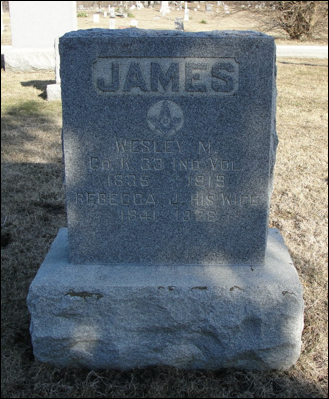
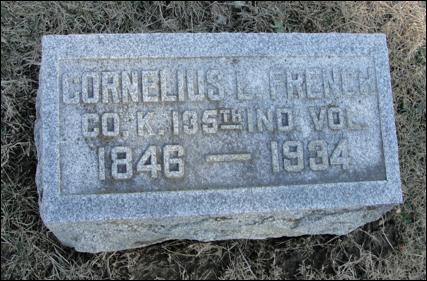
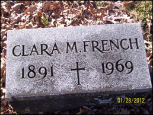
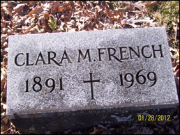

French Family Association
The Official Website of the Surname French
Salisbury Illinois Water Tower, 1855
Chart #206, Samuel S. French, 1817
Scott Co., IN
Helt, Vermillion Co., IN
Champaign Co. IL
Hutton (Salisbury), Coles Co., IL
This chart updated by Mara French on 3/5/12. Numbers in brackets [ ] show sources and refer to the bibliography at the end of this chart. An asterisk (*) shows continuation of that line. Send any corrections or additions to this chart to marafrench@mindspring.com. Revisions: 2012.
NOTE: Please make any corrections or additions to this chart that you can and send them to Mara. Refer to this chart by chart number so that your information will be understood. Refer to each family member by their number. Additions are greatly appreciated. This chart has been widely distributed and is constantly being updated. Although this is not my line, I make additions to it, and you will be notified when your data or someone elses data is added.
Contents
DNA Test Data for Samuel French
FFA Charts Related DNA Test Group 4
DNA Test Group 4 Test Results (old website)
DNA Test Group 4 Test Results (new website)
DNA Test Group 4 Cross-Reference Chart
DNA Test Group 4 Descendant Chart to Testee
Samuel S. French Genealogy
French Genealogy from Wes Groleau
In Appreciation
Wes Groleau, Jan Lund, and Deb Skoff contributed a significant amount to this chart, as well as many others.
Foreword
Ive researched this line just about all I can from ancestry.com and from the internet. Additions need to come from family members or from local books or historians who havent put their information online.
P.S. Although Samuel and David French are not in my line, I will continue to do research on him as time permits. My line is FFA Chart #6.
FFA Charts Related DNA Test Group 4
FFA Chart #10,
John Peter French and William Lewis French of TN
FFA Chart #23,
Isaac French of Canada
FFA Chart #30,
Louisa French of WV, sister of FFA Chart #195
FFA Chart #31,
Henry French of KY
FFA Chart #129,
Peter French of TN – no test yet
FFA Chart #136,
George French of SC
FFA Chart #186,
Philip French of IN, brother of FFA Chart #206
FFA Chart #193,
David French of KY
FFA Chart #194,
Samuel and George Hedges French of IN
FFA Chart #195,
Jacob French Sr. and Jr. of WV
FFA Chart #206,
Samuel and David French of IN, brothers of FFA Chart #186
The DNA expert and administrator for the surname French is Julia French Wood. Email her about all DNA questions to JuliaFWood@aol.com. For ancestry questions, email marafrench@mindspring.com.
Timeline History of Indiana
1679—Robert Cavelier
explores the region of Indiana for France
1763—England gains control of the Indiana
region
1732—Vincennes becomes the Indianas first
permanent settlement
1800—Congress creates the Indiana Territory
1811—Indians are defeated in the Battle of
Tippecanoe
1816—Indiana becomes the 19th state
1825—Indianapolis becomes the state capital
Timeline History of Illinois
1800—present day Coles, Vermillion, Crawford, Shelby, Marion were part of Knox County
1810—the above counties were part of St Clair County
1820—Crawford was a large county later divided into Marion, a smaller Crawford and others; Vermillion and Shelby were part of a large Clark Co.; Marion was part of Jefferson Co.
1830—Vermillion was a large county divided later; Coles was part of Clark and Edgar Cos. Crawford is smaller.
1840—Coles Co. had parts of Douglas and Cumberland Co; small Vermillion consisted of Ford Co. Shelby had part of Moultrie; Crawford small as present day
1850—Coles Co. had parts of Douglas and Cumberland Cos; Vermillion had parts of Ford Co.
History and Background
From Wes Groleau [4]: How many families have a story that starts with, "There were three brothers...." ? That paragraph was written by my great-grandfather, Otto, Samuel's grandson, who never met Samuel, and whose father (John Enos) died when Otto was only seven years old. When I first read it, Otto had already passed on. So I have no idea where he got the story from, nor do I have any evidence for it, other than the meager hints mentioned there make me strongly suspect that his father did come to Indiana from Kentucky [4].
As the family story goes, three brothers migrated to different states: Samuel French moved to Indiana, another brother moved to Pennsylvania, and the third brother moved to Wisconsin. These three brothers were supposedly born in Kentucky, and may have originally come from Virginia about 1735 before immigrating from Wales, England, Ireland, or Scotland [4].
Deciphering the Many Men Named Samuel S. French Born in 1818
There appears to be several men named Samuel S. French born in 1818. The correct one for this line is Samuel French who appears in the Hutton, Coles Co., IL, census of 1880, married to Nancy Anne Ingram on 1 Apr 1838 in Helt, Vermillion Co., IN, d. Jul 1888 in Hutton, Coles Co., IL, and is a blacksmith. This census states that he was born in Kentucky and his father was born in Ohio.
Ohio Census. In 1790, Ohio was still in what was
known as Northwest Territory. 1790 census enumerators did not enter this
hostile territory to take the census so there is not a 1790 Federal census for
the area that was to become Ohio Territory in 1799. 1800
& 1810 Federal censuses were taken in Ohio but the only surviving fragments
are for Washington County, OH. What exists of these early Ohio census records
are included in the 1790-1890 Ohio Census Collection at
Ancestry. Census
records are available in Ohio from 1820 onwards, except for 1890 which were
destroyed by a fire.
1. Not this line: One Samuel S. French was born in Ohio in 1818 and married Rachel and had children Libbie, Josephine, Mary, and Orlando. He lived in Monroe, Randolph Co., IN in 1870. This one is NOT correct as there is another one in the 1870 census living in Hutton, Coles Co., IL, with Anna (Nancy Ann Ingram) his wife and with Taylor, age 22, and Arthur, age 17. The first Samuel appears in 1840 as Samuel S. French, living in West River, Randolph Co., IN, with a son under age 5, he and his wife are both age 20-29; born 1811-1820. Very close fit, but not in the correct area, as this Samuel remained in Randolph Co., IN, for many years. See Ref [16].
2. Not this line: Another Samuel S. French was b. 1817 in Ohio and lived with his wife Amelia Franchini in the 1870 census in Farmington, Trumbull Co., OH. This one is NOT correct as there is another one in the 1870 census living in Hutton, Coles Co., IL, with Anna (Nancy Ann) his wife and with Taylor, age 22, and Arthur, age 17.
3. Not this line: Another Samuel S. French was b. 1817 in Shelby Co., KY. Not many ancestors with the surname French lived in Shelby Co., KY; only Samuel French is listed there as b. 1791 in Virginia, and appears in the 1850 census of Shelby Co., KY, with his wife Susan and son Frank. Samuel and Susan also appear in the 1860 census of Shelby Co., KY; he is 68 and she is 62. However, a larger French family is living next door to them in 1860: F. C. French (probably Frank), b. 1831 in KY; Martha A. French, b. 1833 in KY (probably Franks wife); Laura French, b. 1857 in KY, their daughter; Mary E. French, b. 1859 in KY, their daughter. The head of households for both residences were farmers, not blacksmiths. In the 1880 census of Shelby Co., KY, Frank C. French is 49, b. ca. 1831 in KY, married to Martha A. French, age 47, b. ca. 1833, with children Samuel A. French, age 19; Nannie French, age 12; Robert L. French, age 10; Carrie French; age 2, and Mary Wright, age 72 and Caroline Byars, age 75, both widowed, and both state that both their parents were born in Virginia. This family does not fit in.
4. Not this line: Another Samuel French was b. 1818 in KY and appears in the 1870 census of Walker, Anderson Co., KS. This one is NOT correct as there is another one in the 1870 census living in Hutton, Coles Co., IL, with Anna (Nancy Ann) his wife and with Taylor, age 22, and Arthur, age 17.
5. Not this line: Another Samuel French was b. 1819 in KY, m. Jane French and resided in 1856 in Knox, Clarke Co., IA. This is not the correct line as between 1850 and 1860, Samuel was in Coles Co., IL.
6. Not this line: Another Samuel French was b. 1818 in KY and resided in the 1850 census in DeWitt, IL with his wife Jane (may be same Jane as above). This is not the correct line as in the 1850 census, Samuel was living in Champaign Co., IL, with his wife Nancy, and 4 children.
7. Not this line: Another Samuel French was b. 1819 in KY and resided in the 1870 census in Pine Tavern, Bullitt Co., KY with his wife Margret. FFA Chart #137.
8. Not this line: Another Samuel French was b. 1819 in KY and resided in the 1850 census in Hardin, KY with his wife Elizabeth. In another search, his middle initial is H. and he died in 1876 in Bullitt Co., KY and is buried with his wife Margaret. The cemetery lists her name as Margaret Elizabeth Hoskins, 1815-1903. Samuels father was Thomas French of St. Marys Co., MD, and his father was James French, b. 1750, FFA Chart #137.
Ancestral Lineage
The following two men, Samuel and David, lived next door to
one another in the 1830 census in Helt Township,
Vermillion Co., IN. Samuels wife, Martha, lived with Philips family
after Samuel died.
1.1 Philip French, b. 3 Mar 1790 in (Ohio Co.?) KY, FFA Chart #186, most likely, as they are buried in the same cemeteries and lived in the same locations as Samuel and David. Philip m. Sarah Randall on 12 Aug 1813.
1.2 Samuel French Sr., b. ca. 1789 in (Ohio Co.?) KY. He was in the 1840 census in Helt, Vermillion Co., IN. Is he in 1850 census? He m. Martha probably in 1816. She was b. 1792, d. 3 Jan 1877, buried at Pisgah Cemetery in Vermillion Co., IN.
2.1 Samuel S. French, b. 1817 in Lexington, Scott
Co., IN, m. Nancy Ann Ingram in 1838, he d. 1886, she d. 1888.
3.1 William H. French, b. 1839 in IN.
3.2 Margaret Martha French, b. 18 Jan 1843 (twin) in IL. In 1850 census of Champaign, IL.
3.3 Thomas J. French, b. 18 Jan 1843 (twin) in IL, d. Aug 1845.
3.4 John Enos French, b. 5 May 1845 in IL. In 1850 census of Champaign, IL, m. Martha Ellen Giffin, d. 13 Dec 1891.
3.5 David Taylor French, b. 9 Feb 1847 in IL. In 1850 census of Champaign, IL.
3.6 Arthur Allen French, b. 1851 in IL.
2.2 Daughter French, b. 1810-1820, as stated in the 1820 census. Not in 1840 census.
2.3 Daughter French, b. 1810-1820, as stated in the 1820 census. Not in 1840 census.
2.4 William French, b. 1821-1825, as stated in the 1830 census. Not in 1840 census. He m. Mary who was b. 1821, d. 26 Feb 1856, buried at Trowbridge Cemetery, Vermillion Co., IN.
2.5 Mary French, b. 22 Dec 1824, as stated in the 1830 census. Not in with parents in 1840 census, m. Enoch Jackson and had many children.
2.6 Sarah French, b. 24 May 1827, as stated in the 1830 census. In 1840 census in Helt, m. Andrew Jackson in a double ceremony with her sister Mary.
2.7 Hester French, b. 1826-1830, as stated in the 1830 census. In 1840 census in Helt.
2.8 Margaret French, b. 1831-1835, as stated in the 1840 census in Helt.
2.9 Emeline French, b. 1835-1840, as stated in the 1840 census in Helt.
2.10 Daughter French, b. 1835-1840, as stated in the 1840 census in Helt.
1.3 David French, b. 1793 in KY, m. Rebecca Hudson Sturman. David died in 1855. Rebecca had m1. Isaac Hudson in 1813; Isaac was killed by Indians ca. 1814; Rebecca m. David in 1816. Rebecca Sturman was b. 1790 and d. 1863. Rebecca's sister, Elizabeth Sturman, m. George W. French of FFA Chart #31. Elizabeth and George died before 1860; therefore, Rebecca was the only one still living and various families are living together in the 1860 census. One was David T. Jackson, b. 1841. Living with his brother Samuel S. French was another son, Perry Jackson, b. 1830.
2.x Male Relative French, b. 1801-1810, living in
household in 1830 census.
2.1 William French, b. 3 Dec 1817, m. Martha Abigail
Fleming. In 1840 census of Warren Co., IN, d. 19 Aug 1892.
3.1 Rebecca Jane French, m. Wesley M. James (1841-1928)
3.2 Sylvester Ferguson French (Mar 1844 - 1906), m. Adaline James in 1867.
3.3 Cornelius L. French (1846 - 1934)
3.4 Gertrude French Murray (1848 - 1930)
3.5 Elisabeth French (1849 - ____)
3.6 Vialinda E. French (1850 - 1872)
3.7 Martha A. French Frame (1853 - 1924)
3.8 William Ross French, b. 8 Apr 1855, d. 21 Apr 1939
3.9 Ezekiel M. French (1856 - 1921)
3.10 Cordelia French (1858 - 1872)
3.11 Daniel French (perhaps), b. 1860, d. 1867 at 7 yrs, 8 m., 22 days.
2.2 Alvira French, b. 1817
in Vigo Co., IN.
2.3 Margaret French, b. 1818 in Vigo Co., IN, as per
the 1820 census.
2.4 Mary French, b. 1819 in Vigo Co., IN, as per the
1820 census.
2.5 Samuel C. French, b. 26 Aug 1823 as per the 1830
census. In 1840 census of Warren Co., IN, d. 27 May 1887, m. Mary C.
(1828-1892).
3.1 David French, 1849 in IN, his father may have died young and he lived with his grandmother Rebecca Sturman French. Need to check.
3.2 Mary French, b. 1850 in IN, same as above.
3.3 Flora French, b. 1852 in IN, same as above.
2.6 Daughter French, b. 1823 as per the 1830 census.
2.7 Daughter French, b. 1821-1825 as per the 1830
census.
2.8 Martha A. French, b. 1830 as per the 1830 census.
2.9 Daughter French, b. 1825-1830 as per the 1830
census.
Jackson Family
Samuel Jackson, b. 1809, m. Elizabeth Dyer. We suspect Elizabeth died and Samuel m. Rebecca Sturman Hudson French, wife of David French, but this is still only spectulation. Children of Samuel and Elizabeth (Dyer) Jackson:
Adaline B. Jackson
Allen W. Jackson
Elisa E. Jackson
James Wallace Jackson
Elizabeth J. Jackson
David Tyler Jackson, b. 1841
Thomas Jackson
Louise Jackson
Other Jacksons connected with the French family:
Enoch Jackson, b. 1825, m. Mary French, dau. of Samuel French Sr. Their children:
Mary R. Jackson
William C. Jackson
Elvira E. Jackson
Rachel B. Jackson
John E. Jackson
Martha Jackson
Lydia Jackson
Samuel F. Jackson, b. 1859
Andrew Jackson, m. Sarah French, b. 1827, dau. of Samuel French Sr. Their children:
Mary E. Jackson
John W. Jackson
Nancy A. Jackson
Perry Jackson, b. 1830
In 1832 Alvira Hutson married Jacob M. Jackson in Vermillion County, IN. In 1840 and 1850 Jacob Jackson does not have a wife (Alvira probably had died), but he has sons in the 1840 census. In 1850 a Jacob Jackson is living in the household of John and Mary Skilman in Warren County, IN. Mary French had married John Skilman in 1841. I think Mary French was a daughter of Rebecca and David French [2].
Also in 1850 there is an 18-year old man named Hutson Jackson living in Warren County, IN. I think Hutson Jackson is likely brother of 11-year old David "S" Jackson who's living with the David French family. David Jackson's middle initial is indexed as "S", but the original writing looks like it's an "F" - which could mean that his full name was "David French Jackson". I think Hutson and David are both grandsons of David and Rebecca (Sturman) French. So my theory is that Rebecca had a daughter named Alvira Hutson from Rebecca's marriage to Isaac Hutson. Alvira died before 1840 but had at least 2 sons and her younger son David was living with his FRENCH grandparents in 1850 and 1860 [2].
Early Census Records
1810 Census
Samuel French Sr. (father) would have been 20 years or older and have been head of household, but it is highly unlikely that hed appear in the 1810 census as the 1820 census indicates he married 1810 or shortly afterwards. No census in Indiana that early. There are many listings in KY, but no Samuel.
Rebecca Sturman who married David French, the brother of Samuel French Sr., appears in the 1812 census of Knox Co., IN. Her sister, Elizabeth Sturman, m. George W. French of FFA Chart #31 and in DNA Test Group 4 on 14 Jun 1804 in Harrodsburg, Mercer Co., KY. Elizabeth was b. 29 Jan 1787 in NC; therefore, I would assume Rebecca was born close to that time. Because George and Elizabeth died before the 1860 census, it seems there were many changes in that census, and younger children lived with other French relatives. David was b. 1793 and d. 1855, and Rebecca Sturman was b. 1790 and d. 1863. After David died in 1855, she m. Jackson, who had son David T. Jackson, b. 1841, by a previous marriage.
1820 Census
Samuel French Sr. (father) was b. ca. 1790 in
KY.
1 free white male under 10, b. 1810-1820, Samuel S. b. 1817 in Lexington, Scott
Co., IN, as suggested by the Allen County Library, and by Samuel Stephen Sargent in 1942.
1 free white male 26-44, born 1776-1794, Samuel Sr.,
2 free white females under 10, b. 1810-1820,
1 free white female 16-25, b. 1795-1804, Samuel Sr.s wife
David French is listed in Vigo Co., IN, with a
family of 6:
1 free white male under 10, b. 1810-1820, William French, b. 3 Dec 1817.
1 free white male 26-44, b. 1776-1796, David, b. 1793.
3 free white females under 10, b. 1810-1820, could be from another spouse of
David or Rebecca.
1 free white female 26-44, b. 1776-1796, Davids wife Rebecca Sturman
1830 Census
Samuel French Sr. is listed in Helt Township, Vermillion Co., IN. The two families of David and Samuel Sr. are living next door to each other in this 1830 census. The ages of David and Samuel Sr.s children seem quite close; therefore, I would assume David and Samuel Sr. were brothers. Note that David is not the David French of FFA Chart #193 who lived in KY who d. in 1819.
1 free white male, 5-9, b. 1821-1825, son
1 free white male, 10-14, b. 1816-1820, Samuel S., b. 1817
1 free white male, 40-49, born 1781-1790, Samuel Sr. (Note that David was also
b. 1781-1790)
2 free white females under 5, b. 1825-1830, dau.
1 free white female, 5-9, b. 1821-1829, dau.
1 free white female, 30-39, born 1791-1800, Samuel Sr.s wife, Martha, b. 1792.
David French is listed in Helt
Township, Vermillion Co., IN, with a family of 11:
1 free white male 5-9, b. 1821-1825, son
1 free white male 10-14, b. 1816-1820, William French, b. 1817
1 free white male 20-29, b. 1801-1810 – unknown, not son, but perhaps
relative.
1 free white male 40-49, b. 1781-1790, David
2 free white females under 5, b. 1825-1830,
2 free white females 5-9, b. 1821-1825, dau.
1 free white female 10-14, b. 1816-1820, dau.
1 free white female 15-19,
1 free white female 40-49, b. 1781-1790, Davids wife, who is Rebecca Hudson,
m. 4 Feb 1816 in Vincennes, Knox Co., IN. George French of FFA Chart #31 who m.
Elizabeth Sturman, had a sister, Rebecca Sturman, who m. Isaac Hudson on 11 May 1813 in Knox Co.,
IN. Isaac was killed in an Indian attack shortly after they married, and then
Rebecca m. David French in 1816, the brother of Samuel French. Rebecca and
Elizabeth Sturmans parents were Thomas Humphrey Sturman and Mary Lewis. (Deb has more on the Lewis line and
their connection to Pres. George Washington).
Philip French of FFA Chart #186, a brother to Samuel and David, is listed in Vermillion Co., IN, with 3 male children and 7 female children.
Apparently Warner was not living at home, he married
in 1829.
3 males under 5, born 1825-1830 (Felix, Jacob, Prior)
1 male 40-49 (Philip French, age 40)
3 females 5-9, born 1821-1825 (Sarah, Lovis, unk)
2 females 10-14, b. 1816-1820 (Margaret, Malinda)
1 female 15-19, b. 1811-1815 – (Susan)
1 female 20-29, b. 1801-1810 – (Elizabeth)
1 female 30-39 (Sarah Randall French)
Susan and Prior, died in 1839. Lovis
died at age 30 (1853). Isaac died at age 24 (1859). Susan had son William
Ingram in 1838; therefore, in the 1840 census he would have been under 5.
1840 Census
Samuel French Sr. is listed in Helt, Vermillion Co., IN, with a total of 8 in the family,
he being the only male as son Samuel S. was married in 1838 and living
elsewhere.
1 white male 50-59, Samuel Sr., b. 1781-1790.
2 white females under 5, b. 1835-1840,
2 white females 5-9, b. 1831-1835,
2 white females, 10-14, 1826-1830,
1 white female 40-49, b. 1791-1800, Samuel Sr.s wife, Martha, b. 1792.
David French appears in the 1840 census in
Warren Co., IN, with 8 in his family:
1 free white male, 15-19, b. 1821-1825, son, same as 1830 census
1 free white male 20-29, b. 1811-1820, same as 1830 census, William French,
1817
1 free white male 40-49, b. 1790-1800, David, same as above but indicates b.
1790.
2 free white females, 10-14, b. 1826-1830, same as 1830 census.
2 free white females, 15-19, b. 1821-1825, same as 1830 census.
1 free white female, 50-59, b. 1781-1790, wife, same as 1830 census.
Philip French appears in Helt,
Vermillion Co., IN, children = 5 males, 5 females, see FFA Chart #186.
1 male under 5, b. 1836-1840 – (William Ingram)
1 male 5-9, b. 1831-1835 – (Isaac French)
2 males 10-14, b. 1826-1830 – (Felix and Jacob)
1 male 20-29, b. 1811-1820 – (Pryor, or had he died by 1839?)
1 male 50-59, b. 1790-1799 – (Philip French, d. 7 years later in 1847)
2 females under 5, b. 1835-1840 – (Sarah E. and Lovis
French)
2 females 15-19, b. 1821-1825 – (Sarah and Malinda French)
1 female 20-29, b. 1811-1820 – (Margaret French)
1 female 40-49 (Sarah Randall French)
(Susan and Prior died in 1839)
1850 Census
Samuel French Sr. died in 1847.
Samuel S. Frenchs last child was born in
1858. He is listed in the 1850 census as Saml and
is therefore hard to find. He states he was b. ca. 1817 in KY, and lived in
1850 in District 21, Champaign Co., IL, with his wife Nancy A., b. 1818 also in
KY, and 4 children:
William H. French, b. 1837 in IN.
Margt French, b. 1843 in IL.
John French, b. 1845 in IL.
David French, b. 1847 in IL.
Also living in their household was Elizabeth Dyer and her daughter Susan Dyer;
Perry Jackson age 20; and 3 boys of the Cummings family: Alex 18, James 21, and
Charles 23; and Jacob Hanline from Germany, age 42.
No neighbor French. Elizabeth Dyer resided in Shelby, Jefferson Co., IN in 1880, age 67; therefore, b. 1813.
David French appears in the 1850 census in
Pike, Warren Co., IN, as b. in 1794 in KY, living with Rebecca his wife, also
b. 1794 in PA, and children
Margaret 33 (b. 1817 in IN)
Martha A. 19 (b. 1831 in IN)
and roomers David S. Jackson 11 (b. 1839 in IN) (or
should he be David T. Jackson b. 1841??) and Arnold Shippy
22 (b. 1828 in IN). No neighbor French.
William French, son of David French above, b. 3 Dec 1817, m. Martha Abigail Fleming (1824-1906), and listed in Pike, Warren Co., IN. (Children not all listed in the 1850 census):
Rebecca Jane French, b. 1841, d. 1928, m. Wesley M.
James.
Sylvester Ferguson French, b. 12 May 1844, d. 20 Jan 1906, m. Adaline James.
Cornelius L. French, b. 1846, d. 1934.
Gertrude French, b. 21 Jan
1848, d. 9 Mar 1930, m. Andrew Murray.
Elisabeth French, b. Dec 1849 in Warren Co., IN. Died before 1860.
Vialinda E. French, b. 1850, d. 1872.
Martha A. French, b. 1853, d.
1924, m. _____ Frame.
William Ross French, b. 8 Apr 1855, d. 21 Apr 1939, m. Lillise
Rose Woodward.
Ezekiel M. French, b. 1856, d. 1921.
Cordelia French, b. 1858, d. 15 Aug 1972, age 14.
See http://www.findagrave.com/cgi-bin/fg.cgi?page=gr&GRid=49712604.
Philip French d. before 1850 (in 1847) because he is not in the census with Sarah, age 56, in Helt, Vermillion Co., IN.
Sarah French, age 56, therefore born 1794
Felix French, age 21, therefore born 1829
Isaac French, age 19, therefore born 1831
Elizabeth French, age 16, therefore born 1834
Sarah E. French, age 13, therefore born 1837
William Ingram, age 13, therefore born in 1837
Note that somehow the family of Samuel S. French, b. 19 Mar 1817, who married Nancy Ann Ingram in Helt, Vermillion Co., IN, may be related to Washington Ingram who married Susan French, and had son William Ingram.
1860 Census
Samuel S. French is listed in Hutton, Coles
Co., IL, as Saml, a blacksmith, age 44, b. 1816,
and states he was born in Indiana and his wife, Nancy A. in 1818 in KY. They
are living with their 6 children:
Margaret M. French, b. 1844 in IL.
John E. French, b. 1846 in IL.
D. T. French, b. 1847 in IL.
Arthur French, b. 1851 in IL.
William H. French, b. 1838 in IN.
M. E. French, b. 1843 in IL.
David French had died by 1860, and his wife Rebecca French is listed as a widow, age 68, b. 1792 in KY, living in Pike, Warren Co., IN. Apparently they used IA for IN in the 1860 census.
Margaret French, b. 1823, age 37, in Iowa (Indiana).
David French, b. 1849, age 11, in Iowa (Indiana), perhaps children of Margaret before marrying David. I think the original reads Indiana and not Iowa. It is an abbreviation which ends in an s and looks like Ins and some show a dot to suggest an i. Then youll notice on p. 20 of this census, Iowa is spelled out and it definitely does not look like the others. Then below that is Indiana which very much like the abbreviated word. On this same page 20 is an abbreviation for Illinois, and it definitely isnt that. The problem is that searching on ancestry.com, youll need to search for Iowa even if it is incorrect because that is how the database was set up.
Mary French, b. 1850, age 10, in Iowa – should be Indiana
Flora French, b. 1852, age 8, in Iowa – should be Indiana
William Ross French, b. 1855, age 5, in Iowa – should be Indiana. Son of William French (1817-1892) and Martha Abigail Fleming French (1824-1906), and William French, b. 1817, who was the son of David, b. ca. 1790.
David T. Jackson, b. 1841, age 19, in Iowa – should be Indiana, son of Rebecca Sturman Frenchs second husband by his first wife.
These children listed above are obviously not Rebeccas children, but they could give us a clue. David had a son b. ca. 1821 who could have married and died before the 1860 census.
Philip French of Helt,
Vermillion Co., IN, who had died.
Sarah French, age 63, his wife
Sarah Ellen French, age 22, born 1837
Felix French, age 29, born 1830
Elizabeth French, age 7, b. 1853 (granddaughter)
Henrietta Lester, age 13, b. ca. 1847 in IN, unknown
person
William French (or William Ingram?), born 1837, age 22. It appears that the
William Ingram in the 1850 census, who has the same birth year, died in 1856.
Another William French appears in the 1880 census of Marion, Mercer Co.,
MO, same age, b. 1838 in IN, m. Nancy Shaffer, and he
states that both his parents were born in VA. We believe this is not the same
William French as no one else in this family lived in Mercer Co., MO.
1870 Census
Samuel S. French was living in Hutton, Coles
Co., IL, with
Anna (Nancy Ann) his wife and with
Taylor French, age 22, a wagon maker, and
Arthur French, age 17 in school. It states that Samuel was born in Indiana,
Nancy in Kentucky, and their 2 sons in Illinois.
Rebecca French, widow of David, is not listed.
Philip French of Helt,
Vermillion Co., IN, who had died.
Sarah French, age 76, his wife (living alone)
1880 Census
Samuel S. French was living in Hutton, Coles Co., IL and states that he was born in KY and his father was born in Ohio and his mother in Kentucky. Samuel S. French died 11 Apr 1886 and is buried in Anderson Cemetery, Hutton, Coles Co., IL.
Philip French of Helt,
Vermillion Co., IN, who had died.
Sarah French Bonwell, his wife, age 86, b. 1794
According to the 1880 census of Helt, Vermillion Co., IN, Sarah married again after Philip died in 1847. She married James Bonwell as she is listed in 1880, age 86, widowed, living with some of her French children and using the name Bonwell. She states that both of her parents were born in Virginia, which record is accurate. She died later that year on 10 Sep 1880. James Bonwell was b. 6 Oct 1798 in KY and d. 2 Jan 1875 in Scottland, IL, and is buried at the Friends Chapel Cemetery in Edgar Co., IL. His family lived in Prairie, Edgar Co., IL, see Ref. [16], as well as the French and Randall families.
Fielding (Felix) French (her son), age 57,
therefore born 1823
Nancy French, age 35, born 1845, wife of Felix
Isaac French, age 17, born 1863, son of Fielding and Nancy French
Mary E. French, age 16, born 1864, son of Fielding and Nancy French
George E. French, age 11, born 1869, son of Fielding and Nancy French
Sarah Bonwell, age 86, born 1794, Sarah Randall
French Bonwell
John Bonwell, age 16, born 1864 in Illinois; father
born in Ohio, mother in Indiana
First Generation
Three sons identified:
Samuel French Sr., b. 1789, FFA Chart #206,
DNA Test 195497
Philip French, b. 3 Mar 1790, FFA Chart #186,
DNA Test 176015
David French, b. 1793, FFA Chart #206
1.1* Samuel French Sr., b. ca. 1789 in Lexington, Scott Co., IN, just north of Louisville, Jefferson Co., KY. Worth noting is that Scott Co., IN, did not exist in 1817 and any event that happened there in 1820 or earlier could be reported as Clark, Jackson, Jefferson, Jennings, or Washington Counties. Thereafter, in the 1820, 1830, and 1840 census records of Helt, Vermillion Co., IN, Samuel Sr. is listed as born between 1781-1790, and he died before the 1850 census. He m. Martha probably in 1816.
Marriage
Samuel French Sr. m. Martha ca. 1816. She was b. 1792, d. 3 Jan 1877 at age 85, buried at Pisgah Cemetery in Vermillion Co., IN.
Marthas surname could have been any of the names of neighbors of families who came from VA, NC, or KY: Bonwell, Shively, Hudson, Ingram, Sturman, Leatherman, etc.
Census Records
No census in Indiana in 1810. There are many
listings in KY, but no Samuel.
1820 census of Lexington, Scott Co., IN
is listed as Saml with a family of 5:
Samuel Sr. was b. between 1776-1794
his wife Martha was b. between 1795-1804.
1 son, Samuel S. French, b. 1817 in Lexington, Scott Co., IN, as suggested by
the Allen County Library, and by Samuel Stephen Sargent
in 1942
and 2 daughters under 10, b. 1810-1820.
Map above is of Vermillion County, Indiana
1830 Census of Helt Township, Vermillion Co., IN. The two families of David and Samuel Sr. are living next door to each other in this 1830 census. The ages of David and Samuel Sr.s children seem quite close; therefore, I would assume David and Samuel Sr. were brothers. Note that David is not the David French of FFA Chart #193 who lived in KY who d. in 1819, and he be his his father.

1 free white male, 5-9, b. 1821-1825, son
1 free white male, 10-14, b. 1816-1820, Samuel S., b. 1817
1 free white male, 40-49, born 1781-1790, Samuel Sr. (Note that David was also
b. 1781-1790)
2 free white females under 5, b. 1825-1830, dau.
1 free white female, 5-9, b. 1821-1829, dau.
1 free white female, 30-39, born 1791-1800, Samuel Sr.s wife, Martha, b. 1792.
1840 Census of Helt,
Vermillion Co., IN, with a total of 8 in the family:
1 white male 50-59, Samuel Sr., b. 1781-1790.
2 white females under 5, b. 1835-1840,
2 white females 5-9, b. 1831-1835,
2 white females, 10-14, 1826-1830,
1 white female 40-49, b. 1791-1800, Samuel Sr.s wife, Martha, b. 1792.
1850 Census Samuel had died, and his wife Martha d. 3 Jan 1877 in Vermillion Co., IN, but cannot be found in this census.
1860 Census of Helt,
Vermillion Co., IN, Martha French is 63, living with Margaret Fennimore,
granddaughter of her son Philip French, brother to Samuel French.
Samuel Fennimore, 27, husband
Margaret Hollinsworth Fennimore, 27, dau. of Elizabeth French and Silas Hollinsworth.
Lucy A. Aldridge, 4, Margarets child by first husband Elijah Aldridge who
died.
John W. Aldridge, 2, Margarets child by first husband Elijah Aldridge who
died.
Sarah E. Aldridge, 1, Margarets child by first husband Elijah Aldridge who
died.
William Fennimore, 7, Samuel Fennimores child by first wife Catherine Bennett.
Joseph Fennimore, 3, Samuel Fennimores child by first wife Catherine Bennett.
George Hollingsworth, 21, b. 1839, grandson of Elizabeth French and Silas Hollinsworth; Georges father died in 1847. Elizabeth
French was the dau. of Philip French, the brother of
Samuel French Sr. and David French of this generation.
Martha French, 63, Samuel French Sr.s wife
1870 Census of Helt,
Vermillion Co., IN, Martha French is 73, living with her daughter Emeline French Randall whose husband Alexander Randall had
died. She is also living with her grandchildren:
Martha Randall 8
Leonard S. Randall 4
plus Lafayette Leatherman 21, the grandson of Philip and Sarah French
(Lafayette Leatherman was son of their daughter Margaret French who m.
Christian Leatherman) and George Douglas 22, b. 1848, who could be another
relative. Philip French, Samuels brother, married Sarah Randall; there are
more French/Randall ties. Martha, wife of Samuel, was the mother of not only
Samuel S., but of Philip French; therefore, she lived with various
grandchildren at various times. George S. Douglass is listed as b. 1843,
unmarried, lived in Helt, Vermillion Co., IN, and
signed up for the U.S. Civil War Draft in 1863. Some other Frenches
are in the same book: Jacob French b. 1829; William French b. 1841; Josephes French b. 1838, all in Helt.
Death
Samuel French died in 1847 and does not appear in the 1850 census in Helt, Vermillion Co., IN. Their children lived with their mother, Martha.
Vermillion County Court House which served from 1868 to 1923
History of Parke and Vermillion Counties, Indiana, 1829 — The French family. Felix French (of FFA Chart #186), born here this year, went to Michigan. Samuel French (of FFA Chart #206), long resident. Joseph and John Staats, brothers, were from Virginia. Israel and Abraham Leatherman were lads when they arrived this year. Samuel Hoagland was born in this county in 1829, and was a citizen here for a lifetime. Wesley Southard was born in Virginia in 1811. William Russell, Sr., born in Virginia in 1847 was still living here in 1887. David and Mahlon Russell were born here, in 1830 and 1833.
Martha French d. 3 Jan 1877 at age 85 and is buried at the Pisgah Cemetery in Vermillion Co., IN, as the wife of S. French. Note that Philip French, Samuels brother of FFA Chart #186 also was buried in Vermillion Co., IN at the Trowbridge Cemetery in Hillsdale, near Montezuma, IN. Martha was the only French married at Pisgah Cemetery; whereas, 11 Frenches were buried at the Trowbridge Cemetery.
Martha Frenchs Gravestone
1.2* David French, b. 1793, d. 1855, m. Rebecca Sturman who was b. 1794 and d. 1863.
Marriage
David French m. Rebecca Sturman Hudson on 4 Feb 1816 in Vincennes, Knox Co., IN. Rebecca Sturman appears in the 1812 census of Knox Co., IN. Her sister, Elizabeth Sturman, m. George W. French of FFA Chart #31 and in DNA Test Group 4 on 14 Jun 1804 in Harrodsburg, Mercer Co., KY. Elizabeth was b. 29 Jan 1787 in NC; therefore, I would assume Rebecca was born close to that time. Because George and Elizabeth died before the 1860 census, it seems there were many changes in that census, and younger children lived with other French relatives.
Rebecca Sturman had previously been married to Isaac Hudson on 11 May 1813 in Vincennes, Knox Co., IN, and as he died in 1814, she m. David French. Rebecca and Isaac most likely had a daughter who had 2 sons before dying young.
Census Records
1820 Census of Vigo Co., IN, David had a
family of 6:
1 free white male under 10, b. 1810-1820, William French, b. 3 Dec 1817.
1 free white male 26-44, b. 1776-1796, David French, b. 1793.
3 free white females under 10, b. 1810-1820, could be from another spouse of
David or Rebecca.
1 free white female 26-44, b. 1776-1796, Davids wife Rebecca Sturman
1830 Census of Helt,
Vermillion Co., IN.
David French is listed with a family of 11:
1 free white male 5-9, b. 1821-1825, son
1 free white male 10-14, b. 1816-1820, William French, b. 1817
1 free white male 20-29, b. 1801-1810 – unknown, not son, but perhaps
relative.
1 free white male 40-49, b. 1781-1790, David
2 free white females under 5, b. 1825-1830,
2 free white females 5-9, b. 1821-1825, dau.
1 free white female 10-14, b. 1816-1820, dau.
1 free white female 15-19,
1 free white female 40-49, b. 1781-1790, Davids wife, who is Rebecca Hudson,
m. 4 Feb 1816 in Vincennes, Knox Co., IN. George French of FFA Chart #31 who m.
Elizabeth Sturman, had a sister, Rebecca Sturman, who m. Isaac Hudson on 11 May 1813 in Knox Co.,
IN. Isaac was killed in an Indian attack shortly after they married, and then
Rebecca m. David French in 1816, the brother of Samuel French. Rebecca and
Elizabeth Sturmans parents were Thomas Humphrey Sturman and Mary Lewis. (Deb has more on the Lewis line and
their connection to Pres. George Washington).
1840 Census of Warren Co., IN, with 8 in his
family:
1 free white male, 15-19, b. 1821-1825, son, same as 1830 census
1 free white male 20-29, b. 1811-1820, same as 1830 census, William French,
1817
1 free white male 40-49, b. 1790-1800, David, same as above but indicates b.
1790.
2 free white females, 10-14, b. 1826-1830, same as 1830 census.
2 free white females, 15-19, b. 1821-1825, same as 1830 census.
1 free white female, 50-59, b. 1781-1790, wife, same as 1830 census.
1850 Census of Pike, Warren Co., IN
David b. in 1794 in KY
Rebecca his wife, also b. 1794 in PA, and children
Margaret 33 (b. 1817 in IN)
Martha A. 19 (b. 1831 in IN)
and roomers David S. Jackson 11 (b. 1839 in IN) (or
should he be David T. Jackson b. 1841??) and Arnold Shippy
22 (b. 1828 in IN). No neighbor French.
In 1850 there is an 18-year old man named Hutson Jackson living in Warren County, IN. I think Hutson Jackson is likely brother of 11-year old David "S" Jackson who's living with the David French family. David Jackson's middle initial is indexed as "S", but the original writing looks like it's an "F" - which could mean that his full name was "David French Jackson". I think Hutson and David are both grandsons of David and Rebecca (Sturman) French. So my theory is that Rebecca had a daughter named Alvira Hutson from Rebecca's marriage to Isaac Hutson. Alvira died before 1840 but had at least 2 sons and her younger son David was living with his FRENCH grandparents in 1850 and 1860 [2].
1860 Census of Pike, Warren Co., IN. David French had died by 1860, and his wife Rebecca French is listed as a widow, living in Pike, Warren Co., IN, age 68, b. 1792 in KY. Rebecca is living with her son Samuel C. Frenchs children as Samuel C. French had died; in other words, her grandchildren, David age 11, Mary age 10 and Flora age 8.
Margaret French, b. 1823, age 37, in Iowa (Indiana). She was probably the wife of Rebecca Frenchs son Samuel C. French.
David French, b. 1849, age 11, in Iowa (Indiana), perhaps children of Margaret before marrying David. I think the original reads Indiana and not Iowa. It is an abbreviation which ends in an s and looks like Ins and some show a dot to suggest an i. Then youll notice on p. 20 of this census, Iowa is spelled out and it definitely does not look like the others. Then below that is Indiana which very much like the abbreviated word. On this same page 20 is an abbreviation for Illinois, and it definitely isnt that. The problem is that searching on ancestry.com, youll need to search for Iowa even if it is incorrect because that is how the database was set up.
Mary French, b. 1850, age 10, in Iowa – should be Indiana
Flora French, b. 1852, age 8, in Iowa – should be Indiana
William Ross French, b. 1855, age 5, in Iowa – should be Indiana. Son of William French (1817-1892) and Martha Abigail Fleming French (1824-1906), and William French, b. 1817, who was the son of David, b. ca. 1790.
David T. Jackson, b. 1841, age 19, in Iowa – should be Indiana, son of Rebecca Sturman Frenchs second husband by his first wife.
1870 Census -- Rebecca French, widow of David, is not listed as she had died in 1863.
Land Deeds
10 Sep 1838 in Vermillion Co., IN, 40 acres (below)
18 Mar 1837 in Warren Co., IN, 52.44 acres (below)
Second Generation
Children of Samuel Sr. and Martha French, 1.1
2.1* Samuel S. (could be Sturman or Shively) French, b. 19 Mar 1817 in Lexington, Scott Co., IN, m. Nancy Ann Ingram on 1 Apr 1838 of Helt, Vermillion Co., IN [10] [11], later moving to Hutton, Coles Co., IL, where he was a blacksmith in the early 1840s. Samuel was in the Civil War. He drank heavily. They lived most of their lives in Hutton, Coles Co., IL. He d. 11 Apr 1886 in IN. Samuel was living on the same side of the Wabash River not too far from Philip French, FFA Chart #186. Samuel S. French moved to Indiana.
Samuel S. French was a blacksmith, one of the first to settle in Hutton Township, Coles Co., IL. He had a blacksmith shop at Salisbury, Hutton Township, until his death. The French home was a brick house, which stood just east of the present store building (1942). He used to take old iron to Terre Haute, Indiana, to sell and bring back supplies. His mode of transportation was a covered wagon drawn with a mule team [4].
Census Records
Two census listings of his household say KY, two say IN. Listings of his grown childrens household also say both for birthplace of their father. An historian who lived in the Hutton, Coles Co., IL, wrote in 1942 that Samuels place of birth was Scott Co., IN. The 1820 census of Scott Co., IN, lists Samuel French as head of household with a family of 5 in the township of Lexington. A total of 25 French head of households are listed in the 1820 census of Indiana. A Scott Co. exists in IN, IL, and KY, and Lexington is in IN and KY, but at last we find the correct combination – Lexington, Scott Co., IN, and that his fathers name was Samuel, and that he had 2 sisters born between 1810-1820. Samuel had also lived in Hillsdale near Montezuma, Indiana.
1820 census of Lexington, Scott Co., IN
is listed as Saml with a family of 5:
Samuel Sr. was b. between 1776-1794
his wife Martha was b. between 1795-1804.
1 son, Samuel S. French, b. 1817 in Lexington, Scott Co., IN, as suggested by
the Allen County Library, and by Samuel Stephen Sargent
in 1942
and 2 daughters under 10, b. 1810-1820.
The 1830 census shows no French in Scott Co., IN, but a total of 42 French head of households. Three Samuel French households are listed; one in Orange Co. which is on FFA Chart #194; one in Wayne and Montgomery, Owen Co., IN, and one in Vermillion Co., IN. The most likely one would be Vermillion Co. as that is where son Samuel S. married, plus, a nearby cemetery contains several members of the Ingram and French family. Between 1820 and 1830, two more children are added. It gives us a more accurate date of when his father was born, 1781-1790. Plus it shows he has a brother born 1821-1825 which is a great help, much more so than a sister who could change her name by the 1850 census.
1830 Census of Helt Township, Vermillion Co., IN. The two families of David and Samuel Sr. are living next door to each other in this 1830 census. The ages of David and Samuel Sr.s children seem quite close; therefore, I would assume David and Samuel Sr. were brothers.
1 free white male, 5-9, b. 1821-1825, son
1 free white male, 10-14, b. 1816-1820, Samuel S., b. 1817
1 free white male, 40-49, born 1781-1790, Samuel Sr. (Note that David was also
b. 1781-1790)
2 free white females under 5, b. 1825-1830, dau.
1 free white female, 5-9, b. 1821-1829, dau.
1 free white female, 30-39, born 1791-1800, Samuel Sr.s wife, Martha, b. 1792.
1840 Census – Samuel and Nancy should appear with William Henry French, b. 1839.
Samuel S. French was in Coles Co., IL, in 1845, 1847, 1853, 1855, 1860, 1865, 1870, and 1880, except for a brief time in Champaign Co., IL in 1850.
1850 Census of Champaign Co., IL. Samuel S.
Frenchs last child was born in 1858. He is listed in the 1850 census as Saml and is therefore hard to find. He states he was b.
ca. 1817 in KY, and lived in 1850 in Champaign, IL, with his wife Nancy A., b.
1818 also in KY, and 4 children:
William H. French, b. 1837 in IN. (should be 1839)
Margt French, b. 1843 in IL. (twin with Thomas who
died young)
John French, b. 1845 in IL.
David T. French, b. 1847 in IL.
Also living in their household was Elizabeth Dyer, b. 1813, and her daughter
Susan Dyer; Perry Jackson age 20; and 3 boys of the Cummings family from
Ireland: Alex 18, James 21, and Charles 23; and Jacob Hanline
from Germany, age 42. No neighbor French. Elizabeth Dyer resided in Shelby,
Jefferson Co., IN in 1880, age 67; therefore b. 1813.
1860 Census of Hutton, Coles Co., IL, listed
as Saml, a blacksmith, age 44, b. 1816, and states
he was born in Indiana and his wife, Nancy A. in 1818 in KY. They are living
with their 6 children:
Margaret M. French, b. 1844 in IL.
John E. French, b. 1846 in IL.
D. T. French, b. 1847 in IL.
Arthur French, b. 1851 in IL.
William H. French, b. 1838 in IN.
M. E. French, b. 1843 in IL.
1870 Census in Hutton, Coles Co., IL, Samuel
S. French is living with with
Anna (Nancy Ann) his wife and with
Taylor French, age 22, a wagon maker, and
Arthur French, age 17 in school. It states that Samuel was born in Indiana,
Nancy in Kentucky, and their 2 sons in Illinois.
1880 Census in Hutton, Coles Co., IL, Samuel
S. French states that he was born in KY and his father was born in Ohio and his
mother in Kentucky. Samuel S. French died
11 Apr 1886 and is buried in Anderson Cemetery, Hutton, Coles Co.,
IL.
Marriage
Samuel S. French m. Nancy Ann Ingram on 1 Apr 1838 of Helt, Vermillion Co., IN. Nancy was b. 28 Mar 1819 in Shelby Co., KY, the daughter of Thomas Ingram and Mary E. (Polly) Leatherman of Mill Springs, Shelby Co., KY, she d. Jul 1888, two years after Samuel died, and is also buried at the Anderson Cemetery along with her husband and at least 5 of her children. She used the name Anna in the 1870 census instead of Nancy.
Military
When the Civil War started in 1861, many expected it
to be over in three months. But it kept going, so Samuel and his son John
enlisted as privates in Company K of the 123rd Regiment, Illinois
Infantry. Later, Taylor enlisted in Company A of the 143rd Illinois
Infantry. When the 123rd was disbanded, apparently Samuel went home, but
John transferred to the 68th Illinois Infantry and then to Company C of the 61st
[4].
The 123rd's organizer, Major James A. Connolly, was a
well-known attorney in Coles County. His diaries and letters home have
been published in a book called Three Years in the Army of the
Cumberland. It gives a good picture of Army life, but does not mention the
Frenches. Corporal Leander Stillwell of Company
D, 61st Ill. Inf'y, wrote a book about his regiment's
service. It also makes no mention of the Frenches,
but does mention a group of men from the 123rd joining the Regiment [4].
The 123rd was one of the Regiments that were issued
the Spencer repeating rifle. It held seven shots which could be fired in about
five seconds. Seven more could be reloaded in a few seconds. A
cousin of mine owns one; I've held it and worked the action, and I believe
these times are reasonable. The muzzle loaders which the South had through the
war (and the North at first) took about three seconds for an expert to load and
fire each ball. This weapon certainly gave the Union Army a distinct
advantage [4].
Samuel French signed up for a short tour with a lot of other folks from Hutton, including his son, John Enos French. Both were blacksmiths, though John later became a preacher.
The Illinois State Archives online Civil War database (taken from Civil War application papers) shows the following:
French, Samuel S joined the 123 IL US infantry on 4 Aug 1862. His nativity is listed as Scott County, Indiana. He was 46 years of age (so born about 1816). He was 5'9" tall with dark hair and gray eyes. His occupation was blacksmith and his residence was Hutton, Coles County, Illinois. By checking the Scott Co, IN, 1820 census, there is only one FRENCH family listed there. That is the household of "Saml French". There is one male child living in this household under age 5 - consistent with the age of Samuel S. French. There are also two young female children in the family. Most likely "Saml French" is the father of Samuel S. French. In the 1830 census there is a Samuel French living next door to David French in Vermillion Co, IN. Both men are 40-49 years old. If this is the same man that lived in Scott County in 1820, David French may be the uncle of Samuel S. French of Coles County, Illinois.
DNA
A descendant of this line took a DNA test. Samuel S.
Frenchs son John Enos, and his son Otto Ervy, and his son Otto Eugene, and his son John Edwin
French, (DNA Test 195497).
Death
Samuel S. French died 11 April 1886 and is buried in Anderson Cemetery, Hutton, Coles Co., IL, with his wife and at least 5 of their children. Clerks in Coles County were not able to find probate records. This is unusual, since he owned both a brick house and a blacksmith's shop. Nancy Ingram French died 24 July 1888 and is also buried in Anderson Cemetery. Anderson Cemetery is in the middle of a cornfield about six and a half miles east of Hutton. It is in poor condition. We have made some attempts to get some attention to it, but since we dont live nearby, it's very hard to know who to contact [4].
2.2 Female French, b. 1810-1820, as stated in the 1820 census of Lexington, Scott Co., IN. Not in 1840 census.
2.3 Female French, b. 1810-1820, as stated in the 1820 census of Lexington, Scott Co., IN. Not in 1840 census.
2.4 William French, b. 1821-1825, as stated in the 1830 census. Not in 1840 census. He m. Mary who was b. 1821, d. 26 Feb 1856, buried at Trowbridge Cemetery, Vermillion Co., IN.
2.5 Mary French, b. 22 Dec 1824 in OH as stated in the 1830 census, d. 4 Dec 1902 in Vermillion Co., IN, and is buried at the Pisgah Cemetery in Vermillion Co., IN. She m. Enoch Jackson and had children: Mary R. Jackson Underwood (1848-1899), William C., Elvira Eliza, Rachel B., John Enoch Jackson (1858-1901), Martha, Lydia, and Samuel F. Jackson (1859-1860). From the Newport Hoosier State newspaper, Dec 10, 1902. She died at 78 years old, widow of Enoch Jackson, died Thursday at her home near Hillsdale. Funeral services were held at the house Saturday conducted by Rev. J. E. Wright after which her remains were laid to rest at Pisgah Cemetery. Enoch Jackson was b. 1825, d. 1858, before his last child was born.
Enoch Jackson, b. 1825, m. Mary French, dau. of Samuel French Sr. Their children:
Mary R.
Jackson
William
C. Jackson
Elvira E.
Jackson
Rachel B.
Jackson
John E.
Jackson
Martha
Jackson
Lydia
Jackson
Samuel F. Jackson, b. 1859
2.6 Sarah French, b. 24 May 1827 as stated in the 1830 census. She d. 7 Jul 1855 in IN, and was buried at the Pisgah Cemetery in Vermillion Co., IN. She m. Andrew Jackson on 10 Sep 1847, perhaps in a double ceremony with her sister Mary who married Andrewss brother, Enoch Jackson. They had twins Mary Embre Jackson and John Wesley Jackson who were born and died in 1851. Also daughter Nancy A. Jackson.
Andrew Jackson, m. Sarah French, b. 1827, dau. of Samuel French Sr. Their children:
Mary E.
Jackson
John W.
Jackson
Nancy A.
Jackson
2.7 Hester French, b. Apr 1834 in IN, she m1. Abraham Leatherman on 12 Feb 1854 in Helt, Vermillion Co., IN. He d. ca. 1890. Hester m2. Henry P. Smith, who was also widowed, in 1894. She had no children. Henry had one son from his previous marriage to Sarah [12].
She is listed by age only in the 1840 census in Helt, Vermillion Co., IN.
In the 1860 census of Helt, Vermillion Co., IN, she is listed with Abraham Leatherman; he is 48 and she is 22.
Henry m1. E. Sarah Smith, as they appear in the 1880 census of Clay, Bartholomew Co., IN.
Hester and Henry Smith appear in the 1900 census of Helt, Vermillion Co., IN; she states that both her parents were born in KY. Henry P. Smith was b. Feb 1830 in IN, d. 1912, and Hester d. between 1920 and 1930.
They both appear in the 1910 census in Helt, Vermillion Co., IN.
2.8 Margaret French, b. 1834 in IN, as stated in the 1840 census in Helt. She appears in the 1850 census, living in Helt, Vermillion Co., IN, with her mother as her father Samuel had died in 1847.
2.9 Emeline French, b. 1840, as stated in the 1840 census in Helt. She m. Alexander Randall on 31 Aug 1856 in Vermillion Co., IN. They had son Alexander Randall Jr. b. 13 Sep 1861 in IN. Alexander C. Randall Sr. is listed in the 1860 census of Helt, Vermillion Co., IN, b. 1836 in IN, age 24 and his wife Emeline was 19, living with their 3-year old daughter, Hester Randall, b. 1857 in IN, but apparently Alexander died young. Alexander Randall was the son of Abel and Mary Randall, b. 1795 and 1798, respectively, both in VA. In the 1870 census of Helt, Vermillion Co., IN, apparently Alexander Randall had died, and Emeline is 29, was living with daughter Martha Randall 8, b. 1862 in IN, and Leonard S. Randall is 4, b. 1866 in IN. She is also living with her 73 year-old mother, Martha French, which ties Emeline French as the daughter of Samuel and Martha French.
2.10 Daughter French, b. 1835-1840, as stated in the 1840 census in Helt.
Children of David and Rebecca (Sturman Hudson) French, 1.2
In 1832 Alvira Hutson married Jacob M. Jackson in Vermillion County, IN. In 1840 and 1850 Jacob Jackson does not have a wife (Alvira probably had died), but he has sons in the 1840 census. In 1850 a Jacob Jackson is living in the household of John and Mary Skilman in Warren County, IN. Mary French had married John Skilman in 1841. I think Mary French was a daughter of Rebecca and David French [2].
Also in 1850 there is an 18-year old man named Hutson Jackson living in Warren County, IN. I think Hutson Jackson is likely brother of 11-year old David "S" Jackson who's living with the David French family. David Jackson's middle initial is indexed as "S", but the original writing looks like it's an "F" - which could mean that his full name was "David French Jackson". I think Hutson and David are both grandsons of David and Rebecca (Sturman) French. So my theory is that Rebecca had a daughter named Alvira Hutson from Rebecca's marriage to Isaac Hutson. Alvira died before 1840 but had at least 2 sons and her younger son David was living with his FRENCH grandparents in 1850 and 1860 [2].
2.11* William French, b. 3 Dec 1817 in Vigo Co., IN, son of David French and perhaps a first wife. He m. Martha Abigail Fleming on 3 Dec 1840 in Pike, Warren Co., IN. She was b. 28 Feb 1824, the dau. of Peter Fleming and Rebecca Blount, and she d. 26 Dec 1906 in Washington, Warren Co., IN. William was granted land in Vermillion Co., Indiana on 15 May 1837.
From The Past and Present of Fountain and Warren Counties, Indiana by Thomas A. Clifton [14]:
WILLIAM FRENCH.
This former well-known citizen was an excellent
representative of the better class of farmers of Indiana. He came from ancestry
that distinguished itself in pioneer times in this state. When the country was
covered with an almost interminable forest of large trees and the woods filled
with wild animals, his people came to this part of the state and began to carve
from the primeval forests, build schools and churches, and assisted in
introducing the customs of civilization in the wilderness. They were genuine
pioneers, willing to take the hardships that they might acquire the soil and
the home that was sure to rise [14].
William French was a native of the old Hoosier state,
having been born in Vigo County, near Terre Haute, and was the son of David
French. The latter was distinguished as being one of the earliest permanent
settlers in the state of Indiana, and he was a man of influence and prominence
in his day. William French's boyhood days were spent much as were those of
other pioneer boys, their environment being vastly different from that of boys
of the twentieth century. His education was secured in the early subscription
schools, which was conducted in the log-cabin home of one of the settlers. As
soon as old enough he took his part in the work of clearing the land and
getting it ready for cultivation, which in itself was a task of no small
proportions. During his boyhood he made several journeys to Chicago with on
teams, the trip requiring several days. Before attaining his majority he came
to Warren county with his father and they settled on the Barrens, where the McBloom fann is now situated, and
here William gave his father valuable assistance in creating the new farm. He
remained under the parental roof until he was twenty-live years old, when he
started out for himself. His first land purchase was a modest one, but by
patient perseverance and indefatigable effort he was able to add to his
original tract until eventually he found himself in possession of two hundred
and fifty-five acres of good land. Since the father's death, his two sons,
Cornelius and Ezekiel, have carried on the work so well inaugurated by him. The
improvements on the farm are of a permanent and substantial character and the
productivity of the soil has not been diminished by careful cultivation, but,
on the contrary, so careful has been the management of the same that it is
considered one of the choice farms of the township [14].
William French married Martha A. Fleming, and to them
were born eleven children, namely: Rebecca J., Mrs. James; Sylvester F.,
deceased; Cornelius; Gertrude, Mrs. Murray; Vilinda,
Mrs. Ross, deceased; William R., Cordelia, Martha A.,
Mrs. Frame; Olive, deceased; Ezekiel, and Cecelia, Mrs. High. The father of
these children was a devout member of the Christian church and was a good man
and true. His influence was always on the right side of every moral question
and he took a leading part in the material advancement of the community [14].
Cornelius and Ezekiel French, who are devoting their
time and attention to the operation of the home farm, are men of excellent
standing in their locality and have ably demonstrated their efficiency as
practical and successful farmers. They are both Democrats in their political
affiliations and take an intelligent interest in public affairs, being numbered
among the best families of the township [14].
Census
He is listed in the 1850 census of Pike, Warren Co., IN, with his wife Martha, and children Rebecca L. 9; Sylvester F. 6; Cornelius L. 5; Gertrude 3; and Elisabeth 2.
He is listed in the 1860 census of Pike, Warren Co., IN, with his wife and 9 children.
In the 1900 census, William had died, and Martha was widowed, living in Washington, Warren Co., IN with her sons Cornelius 54, and Ezekial 44. She was born in Ohio (which was probably Indiana at that time), and her father was born in SC and her mother in KY. She had a total of 11 children, and 8 of them were still living in 1900.
Death
William d. 19 Aug 1892 in West Lebanon, IN, at age 75.
William was the son of David French (1793-1855) and
Rebecca Sturman Jackson (1790-1863).
"William French, one of the oldest and
best-known citizens of Warren County, died at his home in West Lebanon on last
Friday. Although Mr. French had been ailing for some time, his death was wholly
unexpected. His disease was congestion of the bowels, super induced by flux.
The deceased had been a resident of Warren County all
his life, being 74 years of age. He was a director of the Warren County fair
association, a public spirited and generous citizen, and leaves a wife and
eight grown children to mourn his death.
Funeral services were held at the family residence in West Lebanon, Sunday afternoon at 2 o'clock, and was largely attended, people from Attica, Williamsport, and all neighboring points being present. Remains were interred in the West Lebanon Cemetery." - August 25, 1892 (Obituary provided by the Fountain County Genealogy Society.)
2.12 Alvira Hutson (from Rebeccas marriage to Isaac Hudson), b. 1817 in Vigo Co., IN, as per the 1820 census, and d. before 1840, as she does not appear in the 1840 and 1850 census records. She m. Jacob M. Jackson in 1832 in Vermillion Co., IN, and had 2 sons before she died: David F. Jackson who was living with his French grandparents in 1850 and 1860, and Hutson Jackson. In the 1850 census, Jacob Jackson is living in the household of John and Mary (French) Skilman in Warren Co., IN.
2.13 Margaret French, b. 1818 in Vigo Co., IN.
2.14 Mary French, b. 1819 in Vigo Co., IN, as per the 1820 census, m. John Skillman in Warren Co., IN.
2.15* Samuel C. French, b. 26 Aug 1823 as per the 1830 census. In 1840 census of Warren Co., IN, d. 27 May 1887, m. Mary C. Bowlus, b. 3 Jan 1828 in Maryland, d. 21 Jan 1892. Samuel m. Mary A. C. French and are together in the 1850 census of Washington, Warren Co., IN. Living with them in 1860 are Absolom Latimore 13, and Mary L. Latimore 4. Mary French is listed in the 1860 census of Washington, Warren Co., IN, living with Samuel and their 3 children: Mary C. French, aage 14, Lewis E. French 9, and Henry S. French 3. Samuel C. French and Mary C. Bowlus French are both buried at the West Lebanon Cemetery in West Lebanon, Warren Co., IN. In the 1870 census of Washington, Warren Co., IN, Samuel and Mary live with their children Lewis E. 18, and Harvey S. 14, and also William Packard, 26. In the 1880 census of Williamsport, Warren Co., IN, with their son Lewis E. Samuel C. French had died by 1887, and Mary C. by 1892.
From The Past and Present of Fountain and Warren Counties, Indiana by Thomas A. Clifton [14]:
Samuel French was a native of Vermillion County,
Indiana, and his wife of Hagerstown, Maryland. He was educated in Vermillion
County, and followed the vocation of farming and stockraising.
He took premiums on stock shipped to Chicago and was an up-to-date man. He was
self-made, starting with nothing, and at the time of his death he was the owner
of six hundred acres of land. He married Mary C. Bowlus,
and their children were as follows: Louis, a farmer of Fountain county, whose
sketch appears elsewhere in this work; Mary Cleantha,
wife of the subject; Henry S., who died on December 23, 1900. Samuel French
moved to Warren County when a young man and spent his life here, dying on May
27, 1887, at the age of sixty-four years. She was a member of the Christian
church.
2.16 Daughter French, b. 1821-1825 as per the 1830 census.
2.17 Daughter French, b. 1821-1825 as per the 1830 census.
2.18 Martha A. French, b. 1830 as per the 1830 census.
2.19 Daughter French, b. 1825-1830 as per the 1830 census.
Third Generation
Children of Samuel S. and Nancy Ann (Ingram) French, 2.1
3.1* William Henry French, b. 25 Feb 1839 in Vermillion Co., IN, as stated in the 1900 census, d. 18 Oct 1902 in Indiana, and is buried at the Salisbury Cemetery in Hutton, Coles Co., IL. William came with his parents to Hutton, Coles Co., IL, as a very small boy. In the 1860 census of Hutton, Coles Co., IL, William was living with his family and siblings, age 22. He was a firefighter as the Fire Chief of Charleston, Coles Co., IL, and a blacksmith.
William m. Mary Elizabeth Hulen on 14 Dec 1876. She was b. 9 Jan 1844, d. 8 Nov 1911. She is buried at the Salisbury Cemetery in Hutton, Coles Co., IL. He d. 18 Oct 1902 and is buried in Charleston, Coles Co., IN.
W. H. French Dead
Another Old Resident Died Saturday Night; Buried Today
Wm. H. French died at nine o'clock Saturday night at his home on Fourteenth
Street after a long illness from consumption and a general breaking down. Mr.
French was about 65 years old and one of our old residents who was well and
favorably known. For a number of years he was chief of the fire department and
one of his cherished hopes was to see an up-to-date department in this city. During
his terms as chief he always did all he could to improve the department. By
trade he was a blacksmith and wagon builder and followed it successfully, as he
was a good workman. He was a member of the Kickapoo Lodge of Odd Fellows and
always took an active interest in the society and was one of the earnest and
faithful workers. He is survived by his wife and several grown children. The
funeral was held at nine o'clock this morning from the family home, under the
auspices of the Kickapoo Lodge. Rev. O. B. Huston conducted the service. The
remains were interred in the Salisbury cemetery and a number of our people
followed them to their last resting place. Charleston Daily Courier, Monday,
October 20, 1902.
3.2 Margaret (Maggie) Martha French, b. 18 Jan 1843 (twin), in Hutton, Coles Co., IL, d. 6 May 1877 age 34, m. Alexander McGahan, who was a doctor. She is buried at the Salisbury Cemetery in Hutton, Coles Co., IL. After she died, Alexander remarried the following year as indicated in the article below. She is in the 1850 census of Champaign, IL. Alexander and his family were buried at the Rombauer Cemetery, Rombauer, Butler Co., MO.
Alexander was b. 29 Jan 1844 and d. 13 Jul 1919 in MO and is buried at the Rombauer Cemetery in Rombauer, Butler Co., MO. They had children Zimeriah D. McGahan, Anna Laura McGahan Ham Osborn, Liza E. McGahan, Mary McGahan, Dora McGahan, Charlie Cecil McGahan, and Lexander Lexie McGahan. Alexander fought in the Civil War with Pvt. Company K Unit 123 in IL in the U.S. Infantry from 4 Aug 1862 to 28 Jun 1865. Margaret was living at home in the 1860 census of Hutton, Coles Co., IL. She is listed in the 1850 census living with her parents, but without her twin brother, as he had died. She is listed as living with her parents in the 1860 census of Hutton, Coles Co., IL.
Spouses of Alexander McGahan:
Margaret Martha French McGahan,
1843-1877
Margaret Elizabeth Vint Stiver,
1861-1946
Jennie M. Conway White, 1868-1942
From The Past and Present of Fountain and Warren Counties, Indiana by Thomas A. Clifton [14]:
ALEXANDER McGAHAN
Practical industry, wisely and vigorously applied,
never fails of success. It carries a man onward and upward, brings out
his individual character and acts as a powerful stimulus to the efforts of
others. The greatest results in life are often obtained by simple means
and the exercise of the ordinary qualities of common sense and
perseverance. The everyday life, with its cares, necessities and duties,
affords ample opportunities for acquiring experience of the best kind and its
most beaten paths provide a true worker with abundant scope for effort and
self-improvement. Among the hard-working and successful farmers of Warren
County, Indiana, the subject of this sketch occupies a leading position.
Alexander McGahan is a son
of Thomas and Melvin (Gard) McGahan,
and his birth occurred on the 25th of September, 1849. He was not
permitted to attend school as much as he desired, but by subsequent reading and
close observation he has acquired a broad fund of information. His
parents are both deceased. In the early days his father had been a steam
boatman on the Mississippi river, but later came to Warren County, Indiana, and
took up land, for which he paid the government one dollar and a quarter per
acre, receiving in return a sheep-skin deed. He also bought some other
land from private owners, for which he paid a higher price. Here he
applied himself to the creation of a pioneer farm and its subsequent
cultivation, for which he used oxen for draft purposes. To him and his
wife were born five children, all of whom are living.
Alexander McGahan has always
applied himself to farming and has been a hard working man. From his youth
he has worked indefatigably and his efforts have been crowned with a degree of
success commensurate with the efforts put forth. He is now the owner of a
fine farm of two hundred and thirty-five acres, located in Medina township,
Warren County, all of which is capable of cultivation excepting about twelve
acres, which is in second-growth timber and used for pasturage purposes.
The land is well drained, Mr. McGahan having
laid about twelve hundred rods of tile. He has always carried on a
diversified system of farming, raising all crops common to this locality, and
he has also given due attention to the raising of live stock. The farm is
well improved and its general appearance is highly creditable to the owner.
On May 15, 1878, Mr. McGahan
was married to Medy Dawson, who was born in 1856, and
to them have been born four children, namely: Thomas, who is a farmer in Warren
County, married Emma Rail; Fred is at home; Daisy A. is the wife of Harley
Downey, a farmer at Battle Ground, Indiana; Cora is deceased.
Politically, Mr. McGahan has taken his conscience as a guide to action and is earnestly espousing the cause of the Progressive party, believing that it is time the citizens of this country should shake off the dominating power of the political rings which have dictated the policies and controlled the administration of the public affairs for so many years. He is a man of keen discernment and gives his support to every movement which has for its object the advancement of the best interests of the community. He enjoys a wide acquaintance and has a host of warm friends [14].
3.3 Thomas J. French, b. 18 Jan 1843 (twin), in Hutton, Coles Co., IL, d. 7 Aug 1845 age 20 months, and is buried at the Anderson Cemetery, Hutton, Coles Co., IL.
3.4* Rev. John Enos French, b. 5 May 1845 in Hutton, Coles Co., IL, d. 13 Dec 1891 age 46 in Cherokee Co., KS, which his military service and pension records confirm. He was a Reverend. He also became a blacksmith, as well as a wagon-maker and farmer and handyman, and a United Brethren minister in Illinois, Missouri, and Kansas. John Enos French invented a hay baler in Kansas. He was buried at the Fairview Cemetery, Melrose, Cherokee Co., KS.
Marriage
John Enos French m. Martha
Ellen Giffin (or Geffen or Giffen)
in Hutton. She was b. 1846, d. 1928, and buried at the El Reno Cemetery, El
Reno, Canadian Co., OK. They had thirteen children [4].
John Enos French was
married to Miss Martha Ellen Giffin of Coles County, Illinois,
by Judge E. Waltrip, on February 15, 1866 at 5:50
P.M. at the home of her father, George Giffin. The
marriage was witnessed by her father and her step mother, Elisabeth Giffin [4].
About three years after their marriage they started their journey west which included Missouri, in 1870. Pioneer and missionary work included many hardships, living in dugouts, which were boles dug in the side of hills, and other make shift places, in order to preach the Gospel and eke out a living [4].
John Enos and Martha Ellen Giffin French moved to Osawatomie, Kansas, and he worked at his trade as a blacksmith and wagon maker. He was also a preacher of the Gospel and united with the United Brethren ministers at a conference in 1875. He worked as a missionary and preached at different places and did pioneer work [4].
About this time in 1887 the family moved to a farm in Cherokee County, Kansas and father established a country blacksmith and light wagon, or hack shop. He also did farming and raising some stock and preaching each Sunday, once a month at different places, which was called a circuit rider. We were old-fashioned folk and father and mother were called Pa and Ma by us children. Father was a real mechanic. He could make a forge weld so one could hardly tell it was welded. He also made wagons, wheels and all, repaired watches and clocks, and could build any thing he wanted. He invented a hay baler and made a model of it and sent it to the Patent office at Washington that would bale two bales of hay at one time using two feeders. I have one half of the blue print but the other half was lost. Father did all our shoe repairing and mother made most of our clothes. There was a small orchard on this farm and Pa dug a hole in the ground, placed straw in the bottom, then put the apples, turnips, potatoes, cabbage and any thing else to keep through the winter, placed straw over these, and covered all up with dirt leaving a place easily uncovered so as to get at the fruit when wanted.
Sister Hester was married at Vark, Kansas, where we lived a short time before moving to the farm. We also lived at Lowell, Kansas, a short time. Sister Hessie, as we called her, was married to Mr. Nourdine Adams, of Carthage, Jasper County, Missouri, September 30, 1888, at our home in Vark, Kansas. Her parents were witnesses. They left to live in Galveston, Texas.
In the winter of 1891 Father took cold shoeing horses and other work. He had built a three-seated hack and finished and painted it. Before he got it sold he took sick with a bad cold which went into pneumonia and he died, December 13, 1891 and was buried in a country cemetery between Oswego and Chetopa, in Cherokee County, Kansas, East of S.H. 59.
The old soldiers Union, the Grand Army of the Republic, placed a four-foot monument at the grave with an open Bible on top with this verse on the front side of the stone:
Farewell my wife and children all, From yon a Father Christ doth call, Mourn not for me, it is in vain, To call me to your sight again. Rev. J. E. French, Died December 13, 1891, Age 46 years 7 months 8 days, Co. C 61st Illinois Infantry.
After Pas death, Ma sold off the shop and farm equipment and stock, receiving very little cash as things did not bring much in those days. With our small belongings, Ma and the children moved to Colombus, Cherokee County, Kansas, so the two oldest girls, Maggie and Nannie, could go to work with Mas help to keep the family together. Sister Maudie went to Galveston, Texas, and worked a while and stayed with Sister Hessie. Columbus was a small town and there was not much work for the girls so we moved to Parsons in Labette County, Kansas in the spring of 1892 [4].
Ma and Pa were real Christians and Pa was a good, old time preacher. He believed in divine healing, called Faith Healing in those days, and prayed for many with good results. One woman, Ma told us children about, had rheumatism with her legs drawn up for eighteen years. Pa gave her faith treatments by rubbing and prayer and she was healed.
Pa had two small Indian ponies, Kate and Moll, by names. He trained them to stand one on each end of a long board with him in the center and teeter-totter together. They were also trained to come home without a driver. After preaching in the school houses at different places, miles away from home, he would wrap the lines around the dash board, lay down in the hack and tell them to go home. They would go into the yard and up to the barn and stop. Of course, that couldnt happen now days with all the auto traffic, but 65 years ago there was scarcely any one on the country roads at night [4].
John Enos French signed up for a short tour with a lot of other folks from Hutton, including his father, Samuel S. French. When the company disbanded, he transferred to the 68th Illinois Infantry. John was absent from the unit for most of the musters. We haven't figured out why. See also http://www.militaryhistoryonline.com/genealogy/ancestorcomments.aspx?id=29078#a
John Enos French was discharged 8 September 1865 at the close of the Civil War [4].
At age 18, he was six feet four inches tall, dark complexion, black hair, black eyes. Mustered out at Nashville, Tennessee as per S.O. No. 48 Hd. Qtrs, Dept. of Tenn. Aug. 22, 1865. I have his discharge papers now in my possession.
John Enos French was married to Miss Martha Ellen Giffin of Coles County, Illinois, by Judge E. Waltrip, on February 15, 1866 at 5:50 P.M. at the home of her father, George Giffin. The marriage was witnessed by her father and her step mother, Elisabeth Giffin [4].
Miss Martha Ellen Giffin (my mother) was born May 4, 1846 in Coles County, Illinois, and spent her early life on a farm. Her grandmother, my great-grandmother, on her mothers side was Hester Keckley [4].
Census
In 1850 census of Champaign, IL, age 5, living with his parents.
He is listed in the 1860 census of Hutton, Coles Co., IL, living with his parents and siblings.
They are listed in the 1870 census of Chariton, Schuyler Co., MO, living with their first two daughters, and a young man named Benjamin Lake, b. 1850, 20 years old at the time.
In the 1880 census of Paradise, Rooks Co., KS, John and Martha are living their 5 children, and John states that his father and mother were born in Indiana.
Martha Ellen was living in the 1895 census of Parsons, Labette Co., KS with her younger children as her husband had died.
Military
Corporal French was discharged from Co. C of the 61st
Regiment, Illinois Infantry. He enlisted in Co. K of the 123rd, and was later
transferred into the 61st.
John Enos French signed up for a short tour with a lot of other folks from Hutton, including his father, Samuel S. French. When the company disbanded, he transferred to the 68th Illinois Infantry. John was absent from the unit for most of the musters.
At age 18, he was six feet four inches tall, dark
complexion, black hair, black eyes. Mustered out at Nashville, Tennessee as per
S.O. No. 48 Hd. Qtrs, Dept. of Tenn. Aug. 22, 1865.
Death
John Enos French d. 13 Dec 1891 and is buried at the Fairview Cemetery, in Melrose, Cherokee Co., KS. The stone is incorrect: Corporal French was discharged from Co. C of the 61st Regiment, Illinois Infantry. He enlisted in Co. K of the 123rd, and was later transferred into the 61st.
Rev J. E. FRENCH
DIED
Dec.13 1891
AGED
46 Ys 7 Ms
& 8 Days.
Co.D 61 Ill.Inft
Farewell my wife and children all
From yon a father Christ doth call
Weep not for me it is in vain
To call me to your sight again
3.5 David Taylor (or D. T. and later known as Taylor) French, b. 9 Feb 1847 in Hutton, Coles Co., IL, d. 22 Jun 1889 in Hutton, Coles Co., IL, buried at the Anderson Cemetery in Hutton, Coles Co., IL. Records are confirmed by military records and The Prairie Sleeps cemetery listings – the cemetery books are not reliable, but the military records are. He was married twice, but had no children. His second marriage was to Elizabeth J. McMorris on 4 Dec 1870, who was from his hometown. Taylor was a wagon maker early on, then a blacksmith.
In 1850 census David lived in Champaign, IL. He is listed in the 1860 census of Hutton, Coles Co., IL, living with his parents and siblings, age 13. By the 1870 census of Hutton, Coles Co., IL, he was 22 years old and living with his parents, using the name Taylor. Taylor was a wagon maker. By the 1880 census of Lincoln, Ottawa Co., KS, he was married to E. J. French, and he was a blacksmith. She was born Elizabeth J. McMorris, and lived in 1860 in Hutton, Coles Co., IL, age 6, born in 1854. Then in 1870, she also lived in Hutton with her parents, Benjamin and Sarah (Johns) McMorris, and her 6 siblings. Benjamins father was born in Ireland. Sarah Johns was his second wife. Altogether, Benjamin had 14 children.
3.6* Arthur Allen French, b. 16 Oct 1853 in Hutton, Coles Co., IL, d. 9 Oct 1908 in Hutton, Coles Co., IL, and is buried at the Salisbury Cemetery in Hutton, Coles Co., IL. He was the postmaster of Hutton. Another source says he was buried at the Giffin Cemetery in Hutton.
Arthur m1. Ella Frances Donaldson, b. 31 Dec 1859 in Coles Co., IL, who d. Feb 18 1892 and is buried at the Salisbury Cemetery in Hutton, Coles Co., IL.
Arthur m2. Julia A. Shaffer presumedly after 1892 as she appears with him in the 1900 census. That census states he was married for 7 years, since 1893. Julia was b. 4 Jul 1844, d. 18 Aug 1915 and is buried at the Salisbury Cemetery in Hutton, Coles Co., IL. No children.
Arthur is listed in the 1860 census of Hutton, Coles Co., IL, living with his parents and siblings, age 9. By the 1870 census of Hutton, Coles Co., IL, Arthur was 17 years old and living with his parents. In the 1880 census of Hutton, Coles Co., IL, he is listed as living next door to his father, and he is also a blacksmith, married to Ella, age 19, living with their newborn son, born in Sep 1878 in IL. By the 1900 census, he was living in Pleasant, Coles Co., IL, married to Julia in 1893, and states that both his parents were born in KY, and he is living there with his 6 children. Both of Julia A. Frenchs parents were born in Germany.
Children of William and Martha Abigail (Fleming) French, 2.11
They had a total of 11 children, and 8 of them were still living in 1900.
3.7 Rebecca Jane French, b. 1841 in Iowa which was Indiana at that time, d. 1928, m. Wesley M. James (1835-1919). She is listed in the 1860 census of Pike, Warren Co., IN, living with her parents and siblings. She is listed in the 1850 census of Pike, Warren Co., IN, living with her parents and siblings. They were both buried at the west Lebanon Cemetery in West Lebanon in Warren Co., IN.

3.8* Sylvester Ferguson French, b. 12 May 1844 in Iowa which was Indiana at that time, d. 20 Jan 1906, m. Adaline James in 1867. She was b. 1848, d. 1918. He is listed in the 1860 census of Pike, Warren Co., IN, living with his parents and siblings. She is listed in the 1850 census of Pike, Warren Co., IN, living with her parents and siblings. They were both buried at the West Lebanon Cemetery in West Lebanon, Warren Co., IN.

3.9 Cornelius L. French, b. 1846 in Iowa which was Indiana at that time, d. 1934. He is listed in the 1860 census of Pike, Warren Co., IN, living with his parents and siblings. She is listed in the 1850 census of Pike, Warren Co., IN, living with her parents and siblings. He was buried at the West Lebanon Cemetery in West Lebanon, Warren Co., IN. He belonged to Co., K 135th Ind. Vol.

3.10 Gertrude French, b. 21 Jan 1848 in Iowa which was Indiana at that time, d. 9 Mar 1930, m. Andrew Dalton Murray. He was b. 1848, d. 1942. She is listed in the 1860 census of Pike, Warren Co., IN, living with her parents and siblings. She is listed in the 1850 census of Pike, Warren Co., IN, living with her parents and siblings.
They were both buried at the West Lebanon Cemetery in West Lebanon, Warren Co., IN. No tombstone was located in the cemetery.
3.11 Elisabeth French, b. Dec 1849 in Warren Co., IN. Died before 1860. She is listed in the 1850 census of Pike, Warren Co., IN, living with her parents and siblings.
They were both buried at the West Lebanon Cemetery in West Lebanon, Warren Co., IN. Daughter of William French and Martha Abigail Fleming French. In the 1850 census she is listed as being 2 years of age (and younger than her sister Gertrude). She is not listed on the 1860 census. No gravestone was found, but she would presumably be buried near the rest of her family.
3.12 Vialinda E. French, b. 1850 in Iowa which was Indiana at that time, d. 1872. She married a man named Ross. She is listed in the 1860 census of Pike, Warren Co., IN, living with her parents and siblings. She was buried at the West Lebanon Cemetery in West Lebanon, Warren Co., IN.
3.13 Martha A. French, b. 1853 in IN, d. 1924, m. Samuel M. Frame. She is listed in the 1860 census of Pike, Warren Co., IN, living with her parents and siblings. Samuel is listed in the 1880 census of Pike, Warren Co., IN, age 24, listed as Sam. Martin Frame, b. 1856 in IN, living with his parents Samuel M. Frame and Viteriah Frame. In the 1900 census of Pike, he states he married Martha in 1882. They are living with 2 sons, Fred and William. They had two more children, but they died. Martha states that her father was born in Virginia and her mother in Indiana. They are listed in the 1910 census of Washington, Warren Co., IN, living with their son William Frame, age 22. In the 1920 census of Washington, Warren Co., IN, Martha states that both her parents were born in Ohio. In the 1930 census of Williamsport, Warren Co., IN, Samuel is widowed, age 74, b. 1856, living alone.
Martha is buried at the West Lebanon Cemetery in West Lebanon, Warren Co., IN.
3.14 William Ross French, b. 8 Apr 1855 in Iowa which was Indiana at that time, d. 21 Apr 1939, m. Lillise Rose Woodward. He is listed in the 1860 census of Pike, Warren Co., IN, living with his parents and siblings.
A William French is listed in the 1880 census as born in 1854 in IN, the son of J. R. French of Indiana and Kate French of Indiana. Also, a William French is listed in Warren Co., IN, as marrying Lillie (or Lillise Rose) Woodward on 30 Nov 1880. She was b. 25 Sep 1856 and d. 17 Oct 1934, the dau. of George W. and Mary (James) Woodward. She m. William Ross French, b. 8 Apr 1855, d. 21 Apr 1939. They had dau. Flora French, 1882-1941, who m. Swisher. They are all buried at the West Lebanon Cemetery in West Lebanon, Warren Co., IN. William Ross French was the son of William French, b. 3 Dec 1817 and d. 19 Aug 1892.
They were both buried at the West Lebanon Cemetery in West Lebanon, Warren Co., IN.
David T. Jacksons parents were (perhaps) Samuel Jackson of TN, 1809-1883, and Elizabeth Dyer, b. 1813 in VA. Elizabeth Dyer was living in the household of Samuel S. French in 1850 in Champaign, IL, so this shows another connection between David and Samuel S. French.
David T. Jackson shows up in the 1880 census of Shelby, Jefferson Co., IN, b. 1842 in IN, a widower. Therefore, Indiana is correct and should not have been Iowa. His name was David Tyler Jackson. He was one of 8 children: Adaline B., Allen W., Elisa E., James Wallace, Elizabeth J., David Tyler, Thomas, and Louise (listed here only for future reference).
3.15 Ezekiel M. French, b. 1856 in Iowa which was Indiana at that time, d. 1921. He is listed in the 1860 census of Pike, Warren Co., IN, living with his parents and siblings.
He is buried at the West Lebanon Cemetery, West Lebanon, Warren Co., IN.
3.16 Cordelia French, b. 1858 in Iowa which was Indiana at that time, d. 15 Aug 1972, age 14. She married a man named Mr. High. She is listed in the 1860 census of Pike, Warren Co., IN, living with her parents and siblings. She was buried at the West Lebanon Cemetery, West Lebanon, Warren Co., IN. The gravestone says Daughter of M. & M. A. French which doesnt make sense.

3.17 Daniel French, b. 1860 in Iowa which was Indiana at that time, d. 1867 at 7 yrs, 8 months, 22 days. He is buried at the West Lebanon Cemetery, West Lebanon, Warren Co., IN. He has a stone, but it is unreadable.
Children of Samuel C. and Mary C. (Bowles) French, 2.15
3.18 Lewis E. French, b. 1851 in Warren Co., IN, a farmer of Fountain Co., IN, m. Mary Cleantha.
Lewis and Bridget French
Lewis appears in the 1860 census of Washington, Warren Co., IN, age 9, living with his parents. He is living with his parents in the 1870 census of Washington, Warren Co., IN, age 18. In the 1880 census, he is living with his parents in Williamsport, Warren Co., IN, age 28, and states that both his parents were born in Kentucky. The 1900 census of Logan, Fountain Co., IN, state that Lewis E. was b. Jul 1853 in IN, and married Bridget L. Reardon in 1884 in IN. In this record he states that his father was born in Indiana and his mother in Maryland, which is the consensus in most documents. Bridget was b. Jan 1867, and it also states that they had 2 children and only 1 was living in 1900, she being Clara H. French, age 8, b. 10 Sep 1891 in IN. Clara d. Nov 1969 in Lafayette, Tippecanoe Co., IN. Daughter Nina Mary French was born first in 1890 and died at 3 years old in 1893. In the 1910 census of Davis, Fountain Co., IN, Lewis and Bridget are living with their daughter Clara, age 18, and with John Roy, age 37, widowed and that John Roys father was born in Canada. This needs further research to perhaps connect FFA Chart #23. This suggests that Lewiss sister married a man with the surname Roy. In the 1920 census of Lafayette, Tippecanoe Co., IN, Lewis E. is living with Bridget L. and with their daughter Clara M. All 3 of the appear together in the 1930 census in Lafayette. Bridget (or Brigid) d. in 1952 and Lewis d. in 1931. This entire family was buried at Saint Marys Cemetery in Lafayette, Tippecanoe Co., IN.
 

From The Past and Present of Fountain and Warren Counties, Indiana by Thomas A. Clifton [14]:
LEWIS E. FRENCH.
No better farmer could be found in Davis and
surrounding townships, Fountain County, than Lewis E. French. He is one of
those men who, early in life, realized the fact that success never smiles upon
the idler or dreamer and he has accordingly followed such an aphorism all the
years of his active manhood, devoting his life to ardent toil along lines that
cannot but insure success. The prosperity which he enjoys has been the result
of energy rightly applied and has been won by commendable qualities. He has
been a busy and careful worker in his chosen life and has never allowed the
"grass to grow under his feet."
Air. French was born in Warren County, Indiana, July
20. 1851, and is the son of Samuel and Alary E. (Bowlus)
French. The father was born in Parke county, Indiana, in 1828, of which county
David French, the paternal grandfather of the subject, was a very early
settler, having come from Ohio. The mother of the subject came to this section
of Indiana when she was twelve years old. with her parents, who located in
"Warren county, two and one-half miles southwest of Williamsport. Three
children were born to Samuel French and wife: Cleantha,
who married Rum Robb, and they live in Warren county; Henry died in 1900; and
Lewis E., of this sketch, who was second in order of birth. The father of the
above named children settled in Warren county, where he spent the rest of his
life engaged in agricultural pursuits. He was a Democrat, but he never held
office.
Lewis E. French grew up on the home farm and was
educated in the common schools. In 1884, he was united in marriage with Bridget
Reradon, daughter of John and Hannah Reradon, natives of Ireland, where they spent their earlier
years, coming to America and locating in Warren county, Indiana, when that county
was comparatively new and contained few settlers. They were thrifty and
courageous, and possessed other characteristic traits of the Irish, so they
soon found themselves in possession of a good home and farm. Mr. Reradon worked on the construction of the Wabash railroad
when it was built into Warren County. Mrs. French was born in that county and
there she grew to womanhood and received her education.
Two children, Nina, who died at three years of age,
and Clara, who lives at home, have been born to the subject and wife.
Politically, Mr. French is a Democrat, has been more
or less active in local party affairs, and is now successfully and
satisfactorily discharging the duties of county supervisor; he is also a member
of the advisory board of Davis township.
Mr. French is the owner of one of the most desirable
farms in this part of the county, owning the old Odell farm, which consists of
two hundred and twenty acres of as valuable and well-improved land as Davis
township can boast of. Here he carries on general farming and stock-raising on
an extensive scale and has accumulated a comfortable competency through his
good management and close application. He has one of the finest homes in the
county.
It is a commodious, beautifully decorated and
convenient residence, in the midst of a fine grove and well-kept lawn.
3.19 Henry S.
French, b. 1848 in Warren
Co., IN, d. 23 Dec 1900. Henry
appears in the 1860 census of
Washington, Warren Co., IN, age 3, living with his parents. Henry m. (does not
state who) on 15 Oct 1895 in Warren Co., IN, and states that his father was
Samuel and mother was Mary Bowles. He
is buried at the West Lebanon Cemetery in West Lebanon, Warren Co., IN.
3.20 David French, b. 1849 in Warren Co., IN, age 11, in Iowa (Indiana) in the 1860 census. I think the original reads Indiana and not Iowa. It is an abbreviation which ends in an s and looks like Ins and some show a dot to suggest an i. Then youll notice on p. 20 of this census, Iowa is spelled out and it definitely does not look like the others. Then below that is Indiana which very much like the abbreviated word. On this same page 20 is an abbreviation for Illinois, and it definitely isnt that. The problem is that searching on ancestry.com, youll need to search for Iowa even if it is incorrect because that is how the database was set up. His father died young (however, I have him dying on 27 May 1887) and David lived with her grandmother Rebecca Sturman French in the 1860 census of Pike, Warren Co., IN.
3.21 Mary C. French, b. 1850 in Warren Co., IN. Mary lived with her grandmother Rebecca Sturman French in the 1860 census of Pike, Warren Co., IN. She m. Mr. Robb on 8 Nov 1862. Is this true? What about the 1860 census in Washington, Warren Co., IN, where she appears with her siblings???
From The Past and Present of Fountain and Warren Counties, Indiana by Thomas A. Clifton [14]:
From The Past and Present of Fountain and Warren Counties, Indiana by Thomas A. Clifton [14]:
WILLIAM WALLACE ROBB.
But few men in Warren county, Indiana, have witnessed
the phenomenal changes that have taken place within the limits of the county
within the past seventy-five years and still live to narrate their experiences
from the early pioneer days up to the present hour of an advanced civilization,
as docs William Wallace Robb, the venerable subject of this biographical
mention, and now a highly respected retired farmer in Washington township.
Mr. Robb, who owns a fine farm of one hundred and
sixty acres, situated about one and one-quarter miles west of Williamsport, was
born on June 20, 1837, and is the son of William and Abi
(Higginbotham) Robb. The father was a native of Mercer county, Pennsylvania,
and the mother of Brown county, Ohio. They came to Fountain county, Indiana, in
1829, remaining there one year, and then came to Warren county, locating
three-quarters of a mile west of Williamsport, where the Bush farm is located.
On that farm the subject of this sketch was born, in a pioneer log cabin and
amid primitive surroundings. He secured his education in the schools of that
period, his vacation periods and morning and evening hours being spent in work
on the farm. He engaged for a time in teaching school in this county, and then
for a short period was engaged in the general mercantile business, but
eventually he returned to agriculture as his permanent vocation. He started out
on a comparatively modest scale, the first piece of land which he bought, and
which is now a part of the homestead, comprising seventy acres. To this he
added ninety acres and then one hundred acres, which latter he subsequently
gave to his daughter, Mrs. Lona Shannon. Mr. Robb
during his active years was a hard-working, energetic and persistent worker,
leaving no stone unturned in his efforts to create a good home. In this effort
he was eminently successful and he was long considered one of the leading
farmers in Washington township. Mr. and Mrs. Robb, after many years of hard,
unremitting toil, were enabled to relinquish the labors of the farm to other
and younger hands and are now living in honorable retirement]
On November 8, 1862, Mr. Robb was united in marriage
with Mary C. French, the daughter of Samuel and Mary C. (Bowlus)
French, and to them were born two children, Lona and
Henry H. Lona is the widow of John A. Shannon, who
met his death in a railroad accident near Fowler. They had two children, Rollin
Robb and Rainey Harper. Samuel French was a native of Vermillion county,
Indiana, and his wife of Hagerstown, Maryland. He was educated in Vermillion
county, and followed the vocation of farming and stock-raising. He took
premiums on stock shipped to Chicago and was an up-to-date man. He was
self-made, starting with nothing, and at the time of his death he was the owner
of six hundred acres of land. He married Mary C. Bowlus,
and their children were as follows: Louis, a farmer of Fountain County, whose
sketch appears elsewhere in this work; Mary Cleantha,
wife of the subject; Henry S., who died on December 23, 1900.
Samuel French moved to Warren County when a young man
and spent his life here, dying on May 27, 1887, at the age of sixty-four years.
She was a member of the Christian church.
Politically, Mr. Robb has been a life-long supporter
of the Democratic party and, though advanced in years, he still takes a live interest
in public affairs. Mr. and Mrs. Robb's religious membership is with the
Christian church, to which they have belonged for fifty years. He early
established a reputation for industry, honesty, integrity, prudence and
judgment, such as few attain.' His common sense and foresight, together with
the traits above enumerated, enabled him to establish a career highly
successful in all its parts. He accumulated wealth in an honorable way and
dealt with his fellow men in a manner that always won for him their high regard
and confidence.
3.22 Flora French, b. 1852 in IN. Her father died young (however, I have him dying on 27 May 1887) and Flora lived with her grandmother Rebecca Sturman French in the 1860 census of Pike, Warren Co., IN.
Fourth Generation
Children of William Henry and Mary Elizabeth (Hulen) French, 3.1
4.1 Nancy Ann French, b. ca. 1851 in IL, d. Apr 1933 age 82 in Chicago, Cook Co., IL [4].
4.2 Samuel A. French, b. Mar 1864 in IL, was a blacksmith [4].
4.3 James T. French, b. ca. 1866 in IL [4].
4.4 John E. French, b. ca. 1871 in IL [4]
4.5 Martha J. French, b. 12 Sep 1859, d. 27 Sep 1859 age 15 days, and is buried at the Giffin Cemetery, Coles Co., IL.
4.6 Sylvester French, b. Dec 1861, d. 21 Feb 1862 age 2 months, and is buried at the Giffin Cemetery, Coles Co., IL.
Children of John Enos and Martha Ellen (Griffin) French, 3.4
4.7 William Henry French, b. 26 Nov 1866 at Hutton, Coles Co., IL; d. 21 Feb 1867 [4] in Coles Co., IL, and is buried at the Giffin Cemetery in Hutton township, Coles Co., IL.
4.8 Nellie Elsie Hester Ann French, b. 21 Mar 1868 in Hutton, Coles County, Illinois. She d. 11 Nov 1951 and is buried at the Memorial Estates Cemetery, Chicago, Cook Co., IL, age 83 [4]. She m. Nouradine Adams and had sons Otis Chester Adams (1891-1979) and Otho Glenn Adams (1895-1971).
She is in the 1870 census of Chariton, Schuyler Co., MO, living with her parents. In the 1880 census of Paradise, Rooks Co., KS, Hester M. is 11 and living with her parents and siblings. In the 1900 census of Pittsburg, Crawford Co., KS, she is listed as age 34, married for 10 years, with 2 children born in IL, and her parents were both born in IL.
4.9 Maggie Jane French, was b. 17 Apr 1870 in Coatsville, Schuyler County, Missouri, d. 2 Mar 1949 [4]. She is in the 1870 census of Chariton, Schuyler Co., MO, living with her parents. In the 1880 census of Paradise, Rooks Co., KS, Margaret J. is 10 and living with her parents and siblings. She was living in the 1895 census of Parsons, Labette Co., KS with her mother as her father had died.
4.10 Nancy Anna French, b. 18 Jan 1872 in Butler, Bates County, Missouri. Then they moved on to Kansas. She d. 1938 and is buried at the El Reno Cemetery, El Reno, Canadian Co., OK [4]. She m. Henry Casper Risse (1868-1944) and had adopted daughter Martha Ellen Kamp (1920-1996). In the 1880 census of Paradise, Rooks Co., KS, Hester M. is 8 and living with her parents and siblings.
4.11 Joszie Ely French, b. 20 Jul 1874, Ottawa Co., KS. He died February 12, 1876 [4].
4.12 John French (twin), b. 25 Aug 1875 in Ottawa, KS, stillborn [4].
4.13 Mary French (twin), b. 25 Aug 1875 in Ottawa, KS, stillborn [4].
4.14 Minnie Maud French, b. 30 Aug 1877 in Concordia, Cloud County, Kansas, d. 18 Dec 1963, age 86 [4]. In the 1880 census of Paradise, Rooks Co., KS, Mina M. is 2 and living with her parents and siblings. She was living in the 1895 census of Parsons, Labette Co., KS with her mother as her father had died.
4.15 Ida Rose French, b. 15 Sep 1879 in Rooks County, Kansas. She m. Charley T. Baldwin on 31 Mar 1897 at age 17 [4]. In the 1880 census of Paradise, Rooks Co., KS, Ida R. is 10 months and living with her parents and siblings. She d. 28 Oct 1963 at age 84 [4]. She was living in the 1895 census of Parsons, Labette Co., KS with her mother as her father had died.
4.16* Otto Ervy French, b. 28 Oct 1884 in Neosho, KS, m. Ida Della Patison. Otto was Wes Groleaus great-grandfather. Otto was living in the 1895 census of Parsons, Labette Co., KS with his mother as his father had died. He m. Ida Della Patison on 3 Apr 1904 in Pittsburg, Crawford Co., KS. He d. 17 Nov 1969 at age 85 and is buried at the Oaklawn Cemetery, Tulsa, Tulsa Co., OK.
Otto Ervy. I was born October 28, 1884 at Thayer, Neosho County, Kansas.
Otto Ervy French, b. 28 Oct 1884 in Thayer, Neosho Co., KS, d. 17 Nov 1969 in Tulsa Co., OK and is buried at the Oaklawn Cemetery. He m. Ida D. French, b. 1885, d. 1984. They had daughter Sylvia Marie French, b. 1908, d. 2004, m. Waack. Otto French passed his fathers discharge certificate down to his daughter Sylvia, and then to her daughter, RosaLee. I (Wesley) took a photograph of the certificate in the 1980s, but we are not sure where the original is now [4].
He is in the 1930, 1920, 1900 census, & SSDI.
4.17 Bessie Minnie French, b. 10 Mar 1886, in Columbus, Cherokee County, Kansas, stillborn.
4.18 Lillie May French, b. 25 Oct 1887 in Carthage, Jasper Co., MO. In the 1900 census, she was living at 106 Forest Ave., Pittsburg, Crawford Co., KS. She d. at age 32 on 12 Mar 1921 and is buried at the El Reno Cemetery in El Reno, Canadian Co., OK. She was living in the 1895 census of Parsons, Labette Co., KS with her mother as her father had died.
4.19 John Enos French, b. 13 Jul 1892 in Parsons, Labette Co., KS. His mother was expecting him 7 months after his father had died. She named him after his father. He d. 1961. He was living in the 1895 census of Parsons, Labette Co., KS with his mother as his father had died. He was a carpenter and auto mechanic, and did not marry.
Children of Arthur A. and Ella (Donaldson) French, 3.6
4.20 Jozie (Joe) W. French, (male) b. 25 Sep 1879 in IL, living in the 1900 census in Pleasant, Coles Co., IL, with his parents and siblings. He d. 17 Oct 1973 at age 94 in Los Angeles, CA.
4.21 Charlie Lee French, b. 30 Mar 1884 in Charleston, IL, living in the 1900 census in Pleasant, Coles Co., IL, with his parents and siblings. By the 1910 census, he was living in Chicago, Cook Co., IL, married to Emma J. French, b. 1891. He was a Traffic Manager for John Morrill & Co., in Minnehaha, SD, when he registered for WWI Draft. He also registered for WWII Draft.
4.22 Louisies E. French, b. Mar 1886 in IL, living in the 1900 census in Pleasant, Coles Co., IL, with her parents and siblings.
4.23 Harry Morton French, b. 20 Sep 1888 in Salisbury, Edgar Co., IL, living in the 1900 census in Pleasant, Coles Co., IL, with his parents and siblings. In the 1920 census, he was living in Murdock, Douglas Co., IL, with his wife, Fern B. French, and their 3 children: Thelma age 7, Bernadine age 4, and newborn Lee Allen French. In the 1930 census, he was living with his wife Beulah Fern French, and their 5 children in Arcola, Douglas Co., IL. Harry registered for the Draft in WWI and WWII. He was a teamster in business for himself in Hume, IL, in 1917.
4.24 Laura Agnes French, b. 30 Mar 1891 in Hutton, Coles Co., IL, living in the 1900 census in Pleasant, Coles Co., IL, with her parents and siblings. She d. 3 May 1923 in Kankakee, Kankakee Co., IL, and is buried in Mattoon, IL, at age 32. She was a Telephone Operator.
Children of Arthur A. and Julia A. French, 3.6
4.25 Gertrude M. (called Maggie) French, b. May 1894 in IL, living in the 1900 census in Pleasant, Coles Co., IL, with her parents and siblings. In the 1910 census, Gertrude was living in Hutton, Coles Co., IL, with her step-mother, Julia. In the 1920 census of Hutton, she had married Roy B. Rennels and they were living with his parents and their children James D. Rennels age 3, Velma M. Rennels age 7, and Edgar B. Rennels age 14. In the 1930 census of Charleston, Coles Co., IL, she was widowed and living with 2 of her children, Duane Rennels age 13 and Denzil Rennels age 9. She d. Feb 1974 in Charleston, Coles Co., IL.
4.26 Ethel French.
Children of Sylvester F. and Adaline (James) French, 3.8
4.27 Fairy French, b. 1866, d. 1923, m. James Monroe Salts, b. 1854, d. 1935, the son of Dicia Salts Crawford and Guy Augustus Salts. They were both buried at the West Lebanon Cemetery, West Lebanon, Warren Co., IN.
4.28* William Franklin French, b. 12 May 1869 in Warren Co., IN, d. 22 Feb 1936 in Lafayette, Tippecanoe Co., IN. He m1. Martha Ella Flynn, b. 7 Apr 1872, d. 27 Sep 1929. He m2. June Etta York on 10 May 1931. Both are buried at the Highland Cemetery in Williamsport, Warren Co., IN.
William Franklin French, of 819 Union St, died at St.
Elizabeth Hospital Saturday evening at 11:45 PM after an illness of one year.
He had been a patient in the hospital for three weeks.
A machinist by trade, he had been employed at the
Ross Gear plant for 16 years until his health failed. Born near West Lebanon,
IN, May 10, 1869, he was the son of Sylvester Ferguson and Adaline
(James) French. He married Martha Ella Flynn in Hedrick, IN, Dec. 18, 1894.
After the marriage, he went into the lumber business and also operated a
general store at Pence, IN. For a time he was a resident of Battleground, IN,
before coming to Lafayette in 1910.
His first wife died Sept 27, 1929, and on May 10,
1931, he married Mrs. June Etta York, who survives. He was a member of St.
Paul's M.E. church and in the Men's Sunday school class of the church. He was
also a member of the Modern Woodmen Lodge of Pence.
He is survived by two sons: Owen H, of California,
and Ethridge C, of Lafayette; also by two granddaughters,
Joyce of California, and Eloise of Lafayette. The body was removed to the
Bradshaw Funeral Home, where friends may call. Funeral services will be held
from the funeral home Tuesday at 2:30 PM with the Rev. J.A. Lord officiating.
Burial will be made in Highland cemetery, Williamsport. --Lafayette Journal
& Courier
Fifth Generation
Children of Otto Ervy and Ida Della (Patison) French, 4.16
5.1 Sylvia Marie French, b. 20 Jun 1908 in Crawford Co., KS, d. 10 Jun 2004 (age 95) in Oklahoma, m. Chester August Waack, b. 1909, d. 1983 and is buried at the Memorial Park Cemetery, Tulsa, Tulsa Co., OK. Sylvia was Wes Groleaus grandmother, Wes mother was Rosa Lee Waack who m. a Groleau.
Sylvia French at 2 years old.
After laying up treasures for nearly 96 years, Sylvia Marie Waack greeted her Savior and finally took up residence in her heavenly mansion on June 10, 2004, and donned her jeweled crown. Sylvia Marie Waack left her adoring family on earth to be reunited in heaven with her husband, Chester, daughter Loretta, and parents Otto and Ida French. She was just 10 days short of reaching her 96th birthday. Sylvia was born in Pittsburg, KS, June 20, 1908. The family moved to Tulsa, OK, where her father owned a brass foundry. The French family were founding members of Central Assembly of God in Tulsa. Sylvia attended Central Bible Institute in Springfield, MO, where she met Chester Waack. After marrying in 1930, they were involved in the ministry with the Assemblies of God in Illinois, Kansas and Oklahoma. In 1942, they moved to Tulsa with their two daughters. In Tulsa, they helped establish Sheridan Assembly with Rev. Glen Millard. She was a secretary for 35 years in Tulsa, retiring at 83 years of age. Sylvia then moved to Maranatha Village, an Assembly of God senior citizens community in Springfield, MO, living there for seven years before moving in with her daughter and son-in-law in Gore, OK, until her death.
Sylvia is survived by a daughter, Rosa Lee Groleau, and son-in-law Richard. She is also survived by five grandchildren, Wesley Groleau of Ft. Wayne, IN; Yvonne Tillapaugh of Denver, CO; Rebecca Cole of Gore, OK; Peter and John Groleau of Las Vegas, NV; 10 great-grandchildren, Cherie Hott, Rebecca Rasmussen, Richard and Neil Tillapaugh, Sheila Cole, Jaime Cox, Travis and Sylvia Cole, Christopher and Michael Groleau; and two great-great-grandchildren, Joseph and Savannah Hott of Denver. She is also survived by her sister, Mary Alice Gilkey; one sister-in-law, Evelyn French; and several nieces and nephews,
Funeral service will be in Sallisaw, OK, at the First Assembly of God on June 14, 2004. A graveside service will be in Tulsa at Memorial Park Cemetery on June 15, 2004. Agent Funeral Home in Sallisaw, OK is in charge of arrangements.
(Written by her son-in-law; published in the SPRINGFIELD NEWS-LEADER, 12/Jun/2004 and in papers in Tulsa and Sallisaw.)
Chester August Waack and Sylvia with Rosa Lee and Loretta At Central Bible Institute, 1928
History of
Mt. Pleasant Township, Whiteside County, IL, from Bent-Wilson 1877 Page
291-296. The first child born in this township was John French born in Jun
1836, a son of Felix French. The first settlement made on the territory now
embraced by Mount Pleasant township was in the latter part of 1835 by Felix
French, among others, who are part of FFA Chart #186. Felix occupied a log
cabin here in 1835.
Vermillion County was created on January 2, 1824 and was formed from Parke County, Unorganized Land and Wabash New Purchase. The Wabash New Purchase: Begun in 1820, this tract lasted until 1835 and then became all of White County and portions of the counties of Boone, Carroll, Fountain, Hendricks, Jasper, Montgomery, Morgan, Parke, Putnam, Tippecanoe, Vermillion, and Warsaw. The County was named for the Vermillion River.
5.2* Otto Eugene French, b. 30 Nov 1913 in Tulsa, OK, m. Evelyn Mae Williams. He d. 15 Apr 1976 at age 65 in Muskogee, OK, and is buried at Memorial Park, Tulsa, OK.
5.3 Mary Elizabeth French, b. 1 Jan 1917, d. 11 Sep 1918 at 20 months.
5.4 John Wiley French, b. 25 Sep 1918 in Tulsa, OK, d. 25 Sep 1918 in Tulsa, OK, stillborn.
5.5 Kenneth Lee French, b. and died stillborn on 21 May 1921 in Tulsa, OK.
5.6 Mary Alice French, b. 25 Feb 1923 in OK, d. 8 Mar 2007 at age 84, buried at the Tahoma National Cemetery, Kent, King Co., WA. She m1. Ferguson, m2. Gilkey.
Children of William Franklin and Martha Ella (Flynn), 4.28
5.3 Owen Hugh French, b. 24 Oct 1896 in Warren Co., IN, d. 13 Nov 1950 in Alameda Co., CA, and is buried at Golden Gate National Cemetery in San Bruno, San Mateo Co., CA. Had daughter Joyce French.
5.4 Ethridge Cornelius Eff French, b. 28 Jan 1907 in Pence, Warren Co., IN, and d. 13 Jan 2003 in Lafayette, Tippecanoe Co., IN. He m. Mildred Louise Larson on 23 Jun 1929 in Lafayette, Tippecanoe Co., IN, and had daughter Eloise French. Mildred was b. 13 Feb 1908 and d. 1 May 2005. Both are buried at the Tippecanoe Memory Gardens in West Lafayette, Tippecanoe Co., IN.
 Eff ca. 1944
Eff ca. 1944
Sixth Generation
Children of Otto Eugene and Evelyn (Williams) French, 5.2
8.1 John Edwin French, b. 2 May 1938 in Tulsa OK, m. Doris May Anglin.
DNA Testing
Administered by Julia French Wood. For any questions regarding DNA, please email Julia at juliaFWood@aol.com.
A good source for research would be for a male with the
surname French of this line to take the DNA test. It is a simple test that
doesnt involve blood. A kit is delivered to your house with special brushes
for you to take cheek swabs and the tip is injected into the tiny test tubes to
be returned to the lab. After the tests that you ordered are completed, in
about 4 weeks, you will be notified and can log in to your personal page at the
company to view your results and your DNA matches. They may match up with one
of the tests shown here: http://www.familytreedna.com/public/french/default.aspx?section=yresults. The FamilyTree DNA website gives a special lower price to those
with the surname French. Read about those who approve of it: http://www.familytreedna.com/testimonials.aspx. To get the
discounted price for our French DNA Project group, go to http://small-stuff.com/FRENCH/DNA/ and click at
the left on "Join the French DNA Project" then place your
order. Julia French Wood suggests the 37 marker test (Y-DNA37), but if you
want to start with 25, you can upgrade to a higher test at a later date if
needed.
Bibliography
[1] Marilyn Horton, mmrlynhrtn@yahoo.com (good in 2011), website: http://hortonfamilies.net/frenchchart.html.
[2] Deb Skoff, skoff@comcast.net, doing research into the possible link to Chart #31. New email in 2010: 1dutchess@gmail.com.
[3] History of the Otto Ervy French Family, by Otto Ervy French, 1958. Otto was b. 28 Oct 1884, m. Eda Della Patison, lived in Kansas and Missouri. His family originally came from Virginia, he assumes, and then moved to Lexington, Fayette Co., KY where 3 children were born and moved to Pennsylvania, Wisconsin, and Indiana. Otto's line was from the Indiana son. 48 pages including photos, contributed by Mrs. John E. French, 8160 South Elwood, Tulsa, OK 74132-3217 [4].
[4] Wes Groleau, website: http://groleau.freeshell.org/ref/lookups.shtml and also http://unigen.us/?itemid=21 and http://UniGen.us/?itemid=11. Excerpts from the earlier work by Otto French (1958) and Sylvia Waack (1986).
Wesley Groleau with wife Monica and sons Christopher and Michael.
[5] 28292 French, Enos 5
May 1767 9 May
1838 9105 S Mehetable Paine Payne
20535 French, Enos 20 Dec
1725 26 May
1811 6722 S Mary Wilcox
6147 French, Enos 20
Jun
1810 2045 S Julia
Moore
6180 French, Enos Van
Horne 2053
S Matilda
Truitt
6005 French, Epharaim
* 30 Aug
1798 1966 P Ezekiel
French
[6] TAUNTON, Michelle J., 1805 Crystal Drive, FFA Member #903. Arlington, VA 22202. (703) 271-8859 (no longer in service). #687. Family names: GIFFIN, INGRAM, KAMP. Connection: Samuel S. Enos French (1), b. 1816 in IN or KY (perhaps Shelby Co.), d. 11 Apr 1886 in Coles Co., IL, m. Nancy Ann Ingram; John Enos French (2), b. 5 May 1845 in IL (perhaps Champaign Co.), d. 13 Dec 1891 in Neosho, Cherokee Co., KS, m. Martha Ellen Giffin; Lillie May French (3), b. 25 Oct 1887 in Carthage, Jasper Co., MO, m. Christian Kamp.
[7] Vermillion County Cemetery Genealogical Website: http://www.vermilioncounty.info/.
[8] A Samuel French Sr. m. Patsy James on 8 Nov 1815 in Greenup Co., KY, who could possibly be the father of Samuel S. French considering Samuels birth date of 1817. Martha has always been known to be Samuel French Sr.s wife, but perhaps he had an earlier wife.
[9] A Jacob French was b. 7 May 1805 and d. 23 Jan 1868 in Winchester, Scott Co., IL, and is buried at the Kincaid Cemetery. His wife Rachel died there in 1888 at age 81, b. 1807.
[10] John Edwin French, FFA member #653. FRENCH, John Edwin, #653. Family names: INGRAM, FIGGEN, PATISON, WILLIAMS, ANGLIN. Connection: Samuel S. Enos French (1), of perhaps Shelby Co. KY (but no proof), m. Nancy Ann Ingram in Vermillion Co. IN on 1 Apr 1838; John Enos French (2), b. 5 May 1845 in Hutton, Coles Co., IL, m. Martha Ellen Giffen; Otto E. French (3), b. 28 Oct 1884, m. Ida Della Patison; Otto Eugene French (4), b. Tulsa, OK 30 Nov 1913, m. Evelyn Williams; John Edwin French (5), b. 2 May 1938 in Tulsa OK, m. Doris May Anglin.
[11] Virginia French Isle, 3219 S. Robinson Pl., West Terre Haute, IN 47885.
[12] History of Parke and Vermillion Counties, Indiana, 1829.
[13] Military History Online Database for all wars, website: http://www.militaryhistoryonline.com/Default.aspx.
[14] Past and Present of Fountain and Warren Counties Indiana, 1913, pp. 779-780
[15] The birthplace of Samuel S. French is shown in the "Illinois Civil War Muster and Descriptive Rolls Database" which is part of the Illinois State Archives. It says his nativity was "Scott Co, IN". (from Deb) website: http://www.ilsos.gov/isaveterans/civilmustersrch.jsp or http://www.cyberdriveillinois.com/departments/archives/datcivil.html. A description of this database says that "each entry includes all of the information that was recorded by the Illinois Adjutant General in the original Muster and Descriptive Rolls." Since the information comes from original civil war records, Samuel S. French himself probably stated that his birthplace was Scott County, Indiana.
[16] 1881 History of Randolph Co., IN, History of Randolph County, Indiana, by E. Tucker, 1882, website: http://books.google.com/books?id=yI9uAAAAMAAJ. As far as we know, this Samuel S. French of Randolph Co., IN, has no connection with FFA Chart #206, but we are keeping it here for future reference.
p. 125
HOPEWELL CEMETERY, GREEN. SECTION 31, TOWN 21, RANGE 13
Samuel French, July 15, 1857, 67 years
Esther French, wife of Samuel French, April 29, 1858, 67 years
p. 130-131
CEMETERIES, UNION CITY
D. French, M.D., January 26, 1870, 68 years
p. 159
PROTESTANT METHODISTS
Hopewell (southwest of Fairview) Some of the members are Howell French and
wife, , John Q, French and wife, Samuel French and wife, , Matilda
French,
p. 185
The following is the account of teachers in Union City schools since 1866:
1874—Principal, J. C. Eagle, $1,000 a year; J. V. Stewart, $4 a day;
Jennie L French, , $2.50 each.
(Jennie French not listed any other year, but there is a Jennie McClure listed
for 1873 and a Jennie Baldwin in 1867)
p. 217-218
JUSTICES
Monroe—Winston E. Harris, George W. McGriff, Samuel S. French, James B.
Somerville. There have doubtless been many more, but we are not able
to designate them. West River—(many) , Samuel French, (many)
p. 245
During the year 1863 alone, seven steamers were sent down the Mississippi by
the State Sanitary, as follows:
Atlanta, Col. W. E. French. 200 packages, several nurses and surgeons. Brought
back from Memphis 175 sick and wounded.
p. 250
Company G, Eighth Indiana
Privates — John French, died at Union City, Ind.;
p. 260-262
SIXTY-NINTH REGIMENT INDIANA INFANTRY (THREE YEARS)
Co. E — Second Lieutenant, Francis French, resigned March 27, 1863.
Privates —William L. French, discharged November 22, 1862, wounds;
p. 274
ONE HUNDRED AND THIRTY-FOURTH REGIMENT (100 DAYS)
Company F— , John W. French, Samuel A. French
p. 281
SKETCH OF OFFICERS.
Francis French, Second Lieutenant Company E, Sixty-ninth Regiment.
p. 284
John French, Eighth Regiment (three years), Company G, died at Union City, Ind.
Josiah French, Eighth Regiment, Company L, died of disease at Nashville, Tenn.,
January 3, 1865
p. 370 (image attached), James M. Harrison m. Emily E. French on 9 Dec 1855.
See also <http://tinyurl.com/86r8tkw>
p. 411 (image attached)
p. 457 (image attached), E. J. Harshman m. Sally French in 1871.
p. 507 (image attached)
Inventors named French prior to 1901 in the IL, IN, KY, and KS
WHIFFLETREE-HOOK
http://www.google.com/patents/US452668
US Pat. 452668 -
Filed Nov 19, 1890 -
Issued May 19, 1891
that I, ALBERT C. FRENCH, of Moninouth, in the county
of Warren and State of Illinois, have invented a ...
HEATING-FURNACE
http://www.google.com/patents/US474316
US Pat. 474316 -
Filed Oct 26, 1889 - Issued May 3, 1892 - LULU E
GEORGE F. FRENCH, OF EVANSTON, ILLINOIS, ASSIGNOR TO LULU E. FRENCH, OF SAME
PLACE. HEATING-FURNACE.
NUT- LOCK
http://www.google.com/patents/US522888
US Pat. 522888 -
Filed Apr 16, 1894 -
Issued Jul 10, 1894
JAMES W. FRENCH AND ALEXANDER W. FRENCH, OF MICHIGAN CITY, INDIANA, NUT- LOCK.
BEE-HIVE
http://www.google.com/patents/US281483
US Pat. 281483 -
Filed Mar 16, 1883 -
Issued Jul 17, 1883
JAMES H. FRENCH, OF ELIZABETHTOWN, KENTUCKY.
SIDEWALK OR FLOOR CONSTRUCTION
http://www.google.com/patents/US630337
US Pat. 630337 -
Filed Jan 13, 1898 -
Issued Aug 8, 1899
JAMES BARRETT FRENCH, OF MATWOOD, ILLINOIS.
SHIELD FOR PERCUSSIVE TOOLS
http://www.google.com/patents/US628455
US Pat. 628455 -
Filed Jul 30, 1898 -
Issued Jul 11, 1899
WALTER FRENCH, OF CHICAGO, ILLINOIS.
PIANO ATTACHMENT
http://www.google.com/patents/US554418
US Pat. 554418 -
Filed Jun 6, 1895 -
Issued Feb 11, 1896 - THE EVERETT PIANO COMPANY
LAMAKTINB M. FRENCH, of Chicago, Illinois, ...
HOISTING APPARATUS
http://www.google.com/patents/US242124
US Pat. 242124 -
Filed Mar 19, 1881 -
Issued May 31, 1881
JAMES M. FRENCH, OF BOWLING GREEN, KENTUCKY.
IMPROVEMENT IN HOG-CHOLERA COMPOUNDS
http://www.google.com/patents/US209879
US Pat. 209879 -
Filed Oct 7, 1873 -
Issued Nov 12, 1878
DAVID S. FRENCH, OF DELPHI, INDIANA.
ELEVATOR
http://www.google.com/patents/US544352
US Pat. 544352 -
Filed Mar 1, 1895 -
Issued Aug 13, 1895 - P ONE
UNITED STATES PATENT OFFICE, ALBERT A. FRENCH, OP BAILEYVILLE, ILLINOIS,
ASSIGNOR OP ONE-HALF TO JOHN W. KAMPEN, OF SAME PLACE.
IIWIAL-POKE
http://www.google.com/patents/US604744
US Pat. 604744 -
Filed Sep 29, 1897 -
Issued May 31, 1898
LEROY W. FRENCH, OF PHILLIPSBURG, KANSAS.
ATTACHMENT FOR LAMP-CHIMNEYS
http://www.google.com/patents/US461749
US Pat. 461749 -
Filed Mar 7, 1891 -
Issued Oct 20, 1891
UNITED STATES PATENT OFFICE, MARY STUART FRENCH, OF MONMOUTH, ILLINOIS.
SIGNAL CALL-BOX
http://www.google.com/patents/US539049
US Pat. 539049 -
Filed Sep 7, 1894 -
Issued May 14, 1895
UNITED STATES PATENT OFFICE, ALBERT E. FRENCH, OF INDIANAPOLIS, INDIANA.
BREAD-TOASTER
http://www.google.com/patents/US613136
US Pat. 613136 -
Filed Mar 8, 1898 -
Issued Oct 25, 1898
LOCK FOR SATCHELS
http://www.google.com/patents/US439138
US Pat. 439138 -
Filed Feb 10, 1890 -
Issued Oct 28, 1890
LA MABTINE FRENCH, OF CHICAGO, ILLINOIS.
PIANO
http://www.google.com/patents/US669689
US Pat. 669689 -
Filed May 31, 1900 -
Issued Mar 12, 1901
UNITED STATES PATENT OFFICE, LAMARTINE M. FRENCH, OF CHICAGO, ILLINOIS.
PIANO
http://www.google.com/patents/US678478
US Pat. 678478 -
Filed Sep 14, 1900 -
Issued Jul 16, 1901 -
LAMARTINE M. FRENCH, OP CHICAGO, ILLINOIS,
CULTIVATOR
http://www.google.com/patents/US289824
US Pat. 289824 -
Filed Aug 27, 1883 -
Issued Dec 11, 1883
SHARON FRENCH, OP SILVER LAKE, KANSAS.
MOTOR
http://www.google.com/patents/US534871
US Pat. 534871 -
Filed Jun 15, 1894 -
Issued Feb 26, 1895
WILLIAM WALTER FRENCH, OF FORT BRANCH, INDIANA.
AUTOMATIC CABLE-LIFTER
http://www.google.com/patents/US446337
US Pat. 446337 -
Filed Oct 27, 1890 -
Issued Feb 10, 1891
_______ of ST. LOUIS, MISSOURI.
METAL-DRILLING MACHINE
http://www.google.com/patents/US505516
US Pat. 505516 -
Filed Oct 22, 1892 -
Issued Sep 26, 1893
GEORGE M. FRENCH, JR., OF CHICAGO, ILLINOIS.
RECIPROCATING SAWS
http://www.google.com/patents/US566511
US Pat. 566511 -
Filed Dec 6, 1895 -
Issued Aug 25, 1896
HENRY FRENCH, a resident of Elkhart, in the county of Elkhart and State of
Indiana,
GUARD FOR SIGNAL-HANDLES
http://www.google.com/patents/US579342
US Pat. 579342 -
Filed Sep 18, 1896 -
Issued Mar 23, 1897
GEORGE M. FRENCH, OF MATTOON, ILLINOIS.
CHUCK FOR WATCH-MAKERS LATHES
http://www.google.com/patents/US237105
US Pat. 237105 -
Filed Jan 27, 1880 -
Issued Feb 1, 1881
AUGUSTUS PEENOH, OF CHICAGO, ILLINOIS.
MACHINE FOR TRIMMING OIL-CAKES
http://www.google.com/patents/US623241
US Pat. 623241 -
Filed Oct 14, 1898 –
Issued Apr 18, 1899
United States Patent Office, ALFRED W. FRENCH, OF CHICAGO, ILLINOIS.
MACHINE FOR STACKING OR PILING BOXES
http://www.google.com/patents/US668681
US Pat. 668681 -
Filed Sep 27, 1900 -
Issued Feb 26, 1901
GEORGE M. FRENCH, OF CHICAGO, ILLINOIS,
STOP-ACTION FOR REED-ORGANS
http://www.google.com/patents/US254950
US Pat. 254950 -
Filed Oct 27, 1881 -
Issued Mar 14, 1882
... of Fort Wayne, in the county of Allen and State of Indiana,
PIANO ATTACHMENT
http://www.google.com/patents/US515426
US Pat. 515426 -
Filed Oct 27, 1893 -
Issued Feb 27, 1894
LA MARTINE M. FRENCH AND CHARLES NALENCE, OF CHICAGO, ILLINOIS.
[17]